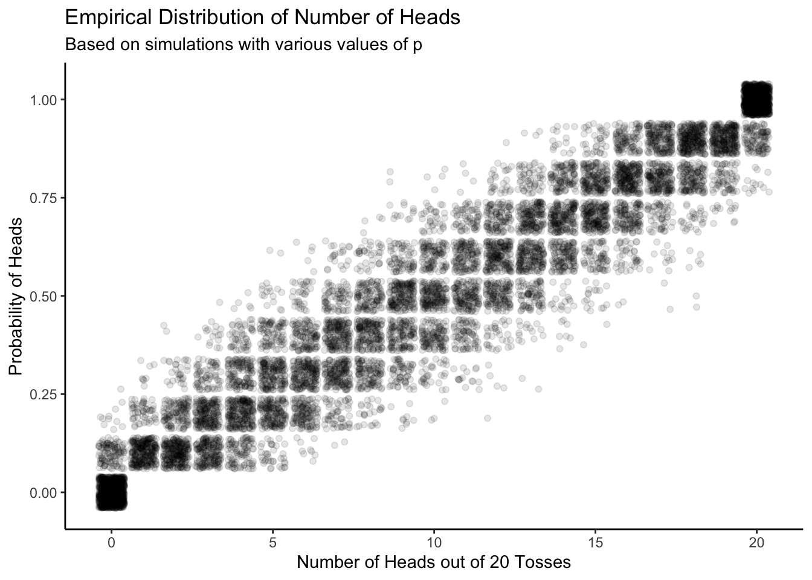
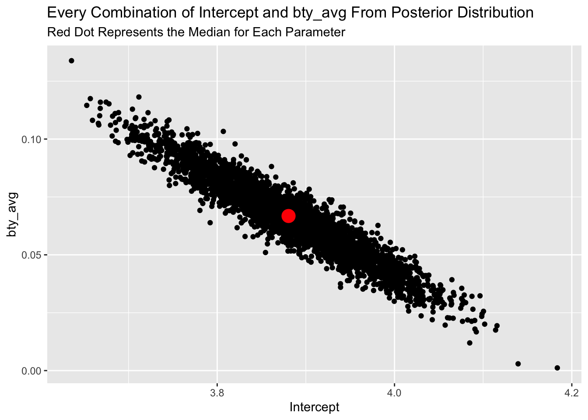
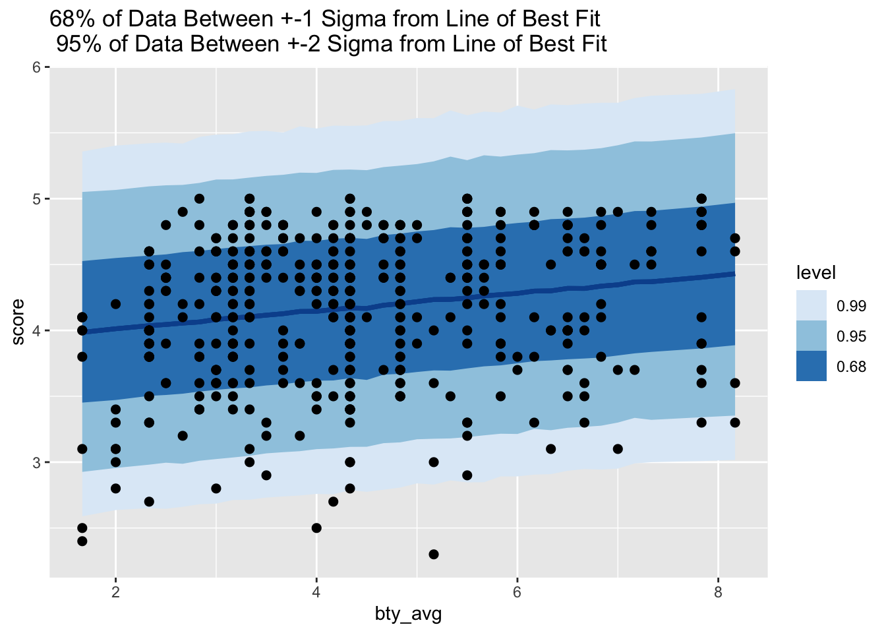
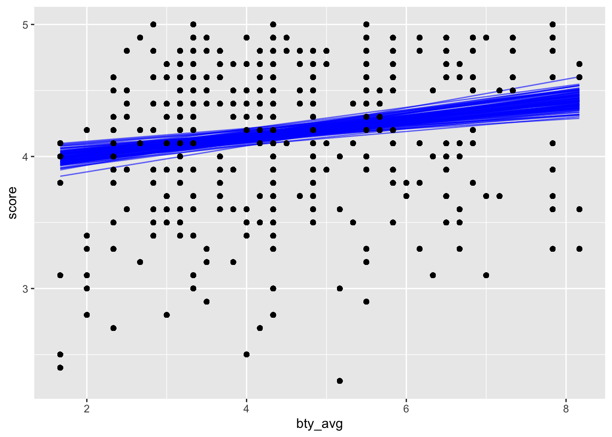
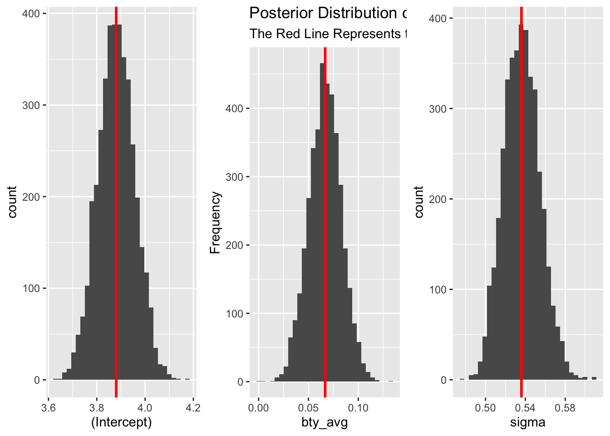
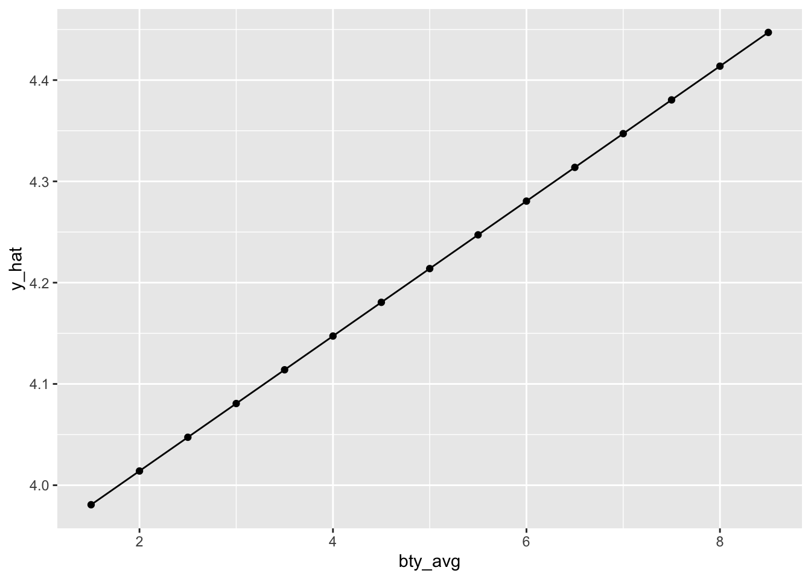
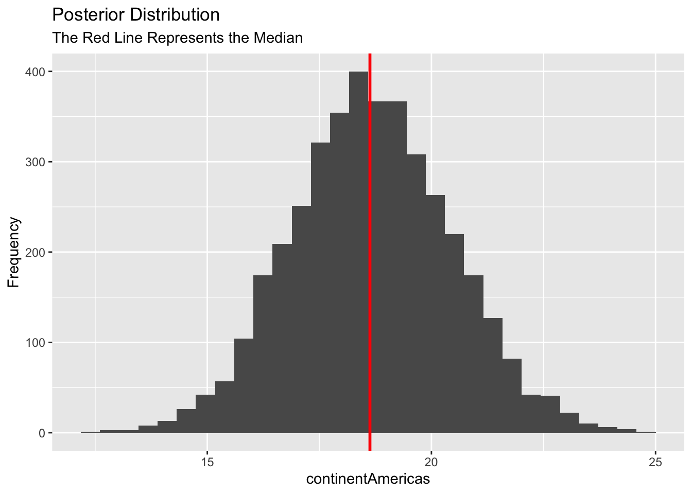
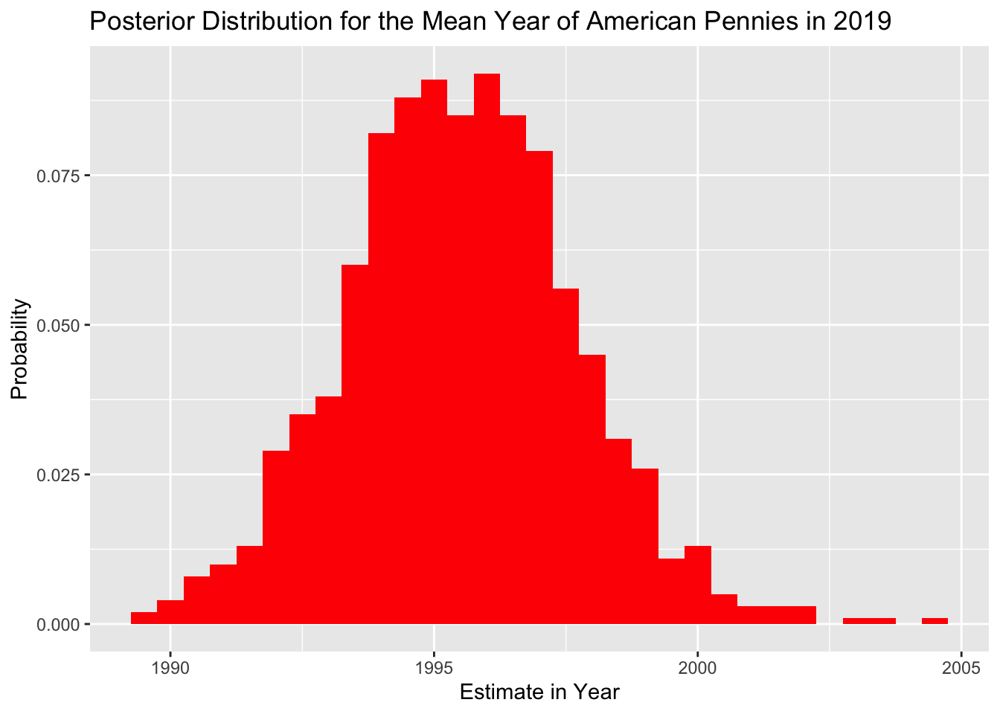
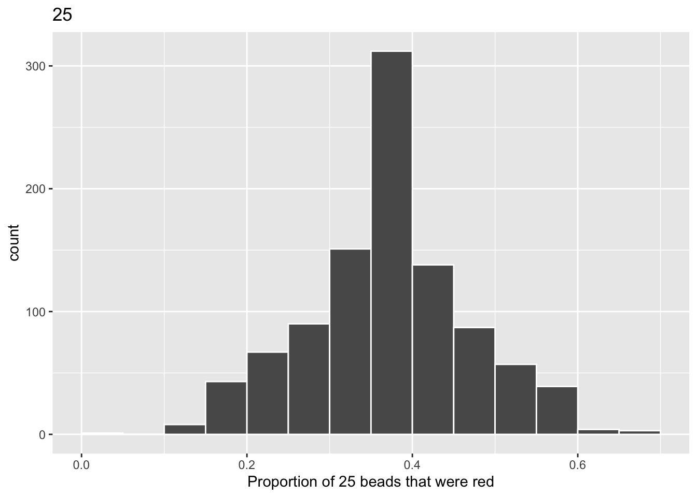
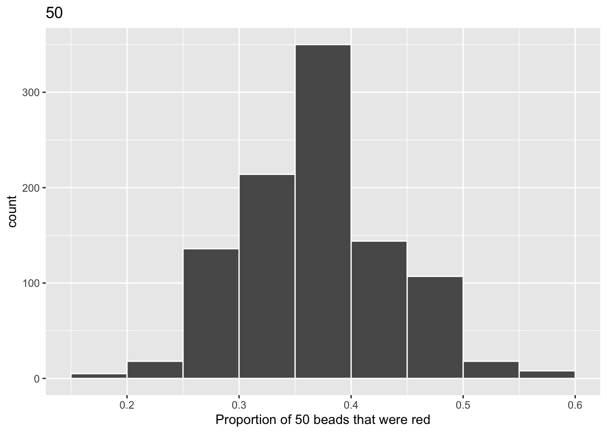

Chapter 10 Continuous Response I
The fundamental goal of data modeling is to make explicit the relationship between:
- an outcome variable \(y\), also called a dependent variable or response variable, and
- an explanatory/predictor variable \(x\), also called an independent variable or covariate.
Another way to state this is using mathematical terminology: we will model the outcome variable \(y\) “as a function” of the explanatory/predictor variable \(x\). When we say “function” here, we aren’t referring to functions in R like the ggplot() function, but rather to a mathematical function. But, why do we have two different labels, explanatory and predictor, for the variable \(x\)? That’s because even though the two terms are often used interchangeably, roughly speaking data modeling serves one of two purposes:
- Modeling for explanation: When you want to explicitly describe and quantify the relationship between the outcome variable \(y\) and an explanatory variable \(x\), determine the importance of any relationships, have measures summarizing these relationships, and possibly identify any causal relationships between the variables. (What’s a causal relationship? Remember the Rubin Causal Model! The causal effect of \(x\) on \(y\) is the difference in potential outcomes of \(y\) given different values of \(x\).)
- Modeling for prediction: When you want to predict an outcome variable \(y\) based on the information contained in a set of predictor variables \(x\). Unlike modeling for explanation, however, you don’t care so much about understanding how all the variables relate and interact with one another, but rather only whether you can make good predictions about \(y\) using the information in \(x\).
For example, say you are interested in an outcome variable \(y\) of whether patients develop lung cancer and information \(x\) on their risk factors, such as smoking habits, age, and socioeconomic status. If we are modeling for explanation, we would be interested in both describing and quantifying the effects of the different risk factors. One reason could be that you want to design an intervention to reduce lung cancer incidence in a population, such as increasing family income. In that case, you would want to know the causal effect of income on the incidence of lung cancer.
If we are modeling for prediction, however, we wouldn’t care so much about understanding how all the individual risk factors contribute to lung cancer, but rather only whether we can make good predictions of which people will contract lung cancer.
Linear regression involves a numerical outcome variable \(y\) and explanatory variables \(x\) that are either numerical or categorical. Furthermore, the relationship between \(y\) and \(x\) is assumed to be linear, or in other words, a line. However, we’ll see that what constitutes a “line” will vary depending on the nature of your explanatory variables \(x\).
In Chapter 10 on basic regression, we’ll only consider models with a single explanatory variable \(x\). In Section 10.1, the explanatory variable will be numerical. This scenario is known as simple linear regression. In Section ??, the explanatory variable will be categorical.
In Chapter 11 on multiple regression, we’ll extend the ideas behind basic regression and consider models with two explanatory variables \(x_1\) and \(x_2\). In Section 11.1, we’ll have two numerical explanatory variables. In Section 11.2, we’ll have one numerical and one categorical explanatory variable. In particular, we’ll consider two such models: interaction and parallel slopes models.
Let’s now begin with basic regression, which refers to linear regression models with a single explanatory variable \(x\). We’ll also discuss important statistical concepts like the correlation coefficient, that “correlation isn’t necessarily causation,” and what it means for a line to be “best-fitting.”
Let’s now load all the packages needed for this chapter (this assumes you’ve already installed them). The main packages are ones we have used before. The Advanced Section of the chapter makes use of
- The rstanarm package, which provides an interface to the statistical inference engine, Stan, for Bayesian Regression Modeling.
- The tidybayes package, which aids in formating Bayesian modeling outputs in a tidy manner and provides ggplot geoms for plotting.
library(tidyverse)
library(PPBDS.data)
library(broom)
library(skimr)
library(gapminder)
library(rstanarm)
library(tidybayes)10.1 Teaching evaluations: one numerical explanatory variable
Why do some professors and instructors at universities and colleges receive high teaching evaluations scores from students while others receive lower ones? Are there differences in teaching evaluations between instructors of different demographic groups? Could there be an impact due to student biases? These are all questions that are of interest to university/college administrators, as teaching evaluations are among the many criteria considered in determining which instructors and professors get promoted.
Researchers at the University of Texas in Austin, Texas (UT Austin) tried to answer the following research question: what factors explain differences in instructor teaching evaluation scores? To this end, they collected instructor and course information on 463 courses. A full description of the study can be found at openintro.org.
In this section, we’ll keep things simple for now and try to explain differences in instructor teaching scores as a function of one numerical variable: the instructor’s “beauty” score (we’ll describe how this score was determined shortly). Could it be that instructors with higher “beauty” scores also have higher teaching evaluations? Could it be instead that instructors with higher “beauty” scores tend to have lower teaching evaluations? Or could it be that there is no relationship between “beauty” score and teaching evaluations? We’ll answer these questions by modeling the relationship between teaching scores and “beauty” scores using simple linear regression where we have:
- A numerical outcome variable \(y\) (the instructor’s teaching score) and
- A single numerical explanatory variable \(x\) (the instructor’s “beauty” score).
10.1.1 Exploratory data analysis
The data on the 463 courses at UT Austin can be found in the evals data frame included in the moderndive package. However, to keep things simple, let’s select() only the subset of the variables we’ll consider in this chapter, and save this data in a new data frame called evals_ch11:
A crucial step before doing any kind of analysis or modeling is performing an exploratory data analysis, or EDA for short. EDA gives you a sense of the distributions of the individual variables in your data, whether any potential relationships exist between variables, whether there are outliers and/or missing values, and (most importantly) how to build your model. Here are three common steps in an EDA:
- Most crucially, looking at the raw data values.
- Computing summary statistics, such as means, medians, and interquartile ranges.
- Creating data visualizations.
Let’s perform the first common step in an exploratory data analysis: looking at the raw data values. Because this step seems so trivial, unfortunately many data analysts ignore it. However, getting an early sense of what your raw data looks like can often prevent many larger issues down the road.
You can do this by using RStudio’s spreadsheet viewer or by using the glimpse() function as introduced in Subsection ?? on exploring data frames:
## Rows: 463
## Columns: 4
## $ ID <int> 1, 2, 3, 4, 5, 6, 7, 8, 9, 10, 11, 12, 13, 14, 15, 16, 17, 18…
## $ score <dbl> 4.7, 4.1, 3.9, 4.8, 4.6, 4.3, 2.8, 4.1, 3.4, 4.5, 3.8, 4.5, 4…
## $ bty_avg <dbl> 5.000, 5.000, 5.000, 5.000, 3.000, 3.000, 3.000, 3.333, 3.333…
## $ age <int> 36, 36, 36, 36, 59, 59, 59, 51, 51, 40, 40, 40, 40, 40, 40, 4…## ID score bty_avg age
## Min. : 1.0 Min. :2.300 Min. :1.667 Min. :29.00
## 1st Qu.:116.5 1st Qu.:3.800 1st Qu.:3.167 1st Qu.:42.00
## Median :232.0 Median :4.300 Median :4.333 Median :48.00
## Mean :232.0 Mean :4.175 Mean :4.418 Mean :48.37
## 3rd Qu.:347.5 3rd Qu.:4.600 3rd Qu.:5.500 3rd Qu.:57.00
## Max. :463.0 Max. :5.000 Max. :8.167 Max. :73.00Observe that Observations: 463 indicates that there are 463 rows/observations in evals_ch11, where each row corresponds to one observed course at UT Austin. It is important to note that the observational unit is an individual course and not an individual instructor. Recall from Subsection ?? that the observational unit is the “type of thing” that is being measured by our variables. Since instructors teach more than one course in an academic year, the same instructor will appear more than once in the data. Hence there are fewer than 463 unique instructors being represented in evals_ch11.
A full description of all the variables included in evals can be found at openintro.org or by reading the associated help file (run ?evals in the console). However, let’s fully describe only the 4 variables we selected in evals_ch11:
-
ID: An identification variable used to distinguish between the 1 through 463 courses in the dataset. -
score: A numerical variable of the course instructor’s average teaching score, where the average is computed from the evaluation scores from all students in that course. Teaching scores of 1 are lowest and 5 are highest. This is the outcome variable \(y\) of interest. -
bty_avg: A numerical variable of the course instructor’s average “beauty” score, where the average is computed from a separate panel of six students. “Beauty” scores of 1 are lowest and 10 are highest. This is the explanatory variable \(x\) of interest. -
age: A numerical variable of the course instructor’s age.
An alternative way to look at the raw data values is by choosing a random sample of the rows in evals_ch11 by piping it into the sample_n() function from the dplyr package. Here we set the size argument to be 5, indicating that we want a random sample of 5 rows. We display the results below. Note that due to the random nature of the sampling, you will likely end up with a different subset of 5 rows.
## # A tibble: 5 x 4
## ID score bty_avg age
## <int> <dbl> <dbl> <int>
## 1 44 4.8 4.67 33
## 2 146 4.3 3.83 58
## 3 92 3.6 2.5 56
## 4 187 4.3 4.33 47
## 5 360 3.9 5.83 52Now that we’ve looked at the raw values in our evals_ch11 data frame and got a preliminary sense of the data, let’s move on to the next common step in an exploratory data analysis: computing summary statistics. Let’s start by computing the mean and median of our numerical outcome variable score and our numerical explanatory variable “beauty” score denoted as bty_avg. We’ll do this by using the summarize() function from dplyr along with the mean() and median() summary functions we saw in Section 2.1.
evals_ch11 %>%
summarize(mean_bty_avg = mean(bty_avg),
mean_score = mean(score),
median_bty_avg = median(bty_avg),
median_score = median(score))## # A tibble: 1 x 4
## mean_bty_avg mean_score median_bty_avg median_score
## <dbl> <dbl> <dbl> <dbl>
## 1 4.42 4.17 4.33 4.3However, what if we want other summary statistics as well, such as the standard deviation (a measure of spread), the minimum and maximum values, and various percentiles?
Typing out all these summary statistic functions in summarize() would be long and tedious. Instead, let’s use the convenient skim() function from the skimr package. This function takes in a data frame, “skims” it, and returns commonly used summary statistics. Let’s take our evals_ch11 data frame, select() only the outcome and explanatory variables teaching score and bty_avg, and pipe them into the skim() function:
| Name | Piped data |
| Number of rows | 463 |
| Number of columns | 2 |
| _______________________ | |
| Column type frequency: | |
| numeric | 2 |
| ________________________ | |
| Group variables | None |
Variable type: numeric
| skim_variable | n_missing | complete_rate | mean | sd | p0 | p25 | p50 | p75 | p100 | hist |
|---|---|---|---|---|---|---|---|---|---|---|
| score | 0 | 1 | 4.17 | 0.54 | 2.30 | 3.80 | 4.30 | 4.6 | 5.00 | ▁▁▅▇▇ |
| bty_avg | 0 | 1 | 4.42 | 1.53 | 1.67 | 3.17 | 4.33 | 5.5 | 8.17 | ▃▇▇▃▂ |
For the numerical variables teaching score and bty_avg it returns:
-
n_missing: the number of missing values -
complete_rate: the percentage of non-missing or complete values -
mean: the average -
sd: the standard deviation -
p0: the 0th percentile: the value at which 0% of observations are smaller than it (the minimum value) -
p25: the 25th percentile: the value at which 25% of observations are smaller than it (the 1st quartile) -
p50: the 50th percentile: the value at which 50% of observations are smaller than it (the 2nd quartile and more commonly called the median) -
p75: the 75th percentile: the value at which 75% of observations are smaller than it (the 3rd quartile) -
p100: the 100th percentile: the value at which 100% of observations are smaller than it (the maximum value)
Looking at this output, we can see how the values of both variables are distributed. For example, the mean teaching score was 4.17 out of 5, whereas the mean “beauty” score was 4.42 out of 10. Furthermore, the middle 50% of teaching scores was between 3.80 and 4.6 (the first and third quartiles), whereas the middle 50% of “beauty” scores falls within 3.17 to 5.5 out of 10.
The skim() function only returns what are known as univariate summary statistics: functions that take a single variable and return some numerical summary of that variable. However, there also exist bivariate summary statistics: functions that take in two variables and return some summary of those two variables. In particular, when the two variables are numerical, we can compute the correlation coefficient. Generally speaking, coefficients are quantitative expressions of a specific phenomenon. A correlation coefficient is a quantitative expression of the strength of the linear relationship between two numerical variables. Its value ranges between -1 and 1 where:
- -1 indicates a perfect negative relationship: As one variable increases, the value of the other variable tends to go down, following a straight line.
- 0 indicates no relationship: The values of both variables go up/down independently of each other.
- +1 indicates a perfect positive relationship: As the value of one variable goes up, the value of the other variable tends to go up as well in a linear fashion.
The following figure gives examples of 9 different correlation coefficient values for hypothetical numerical variables \(x\) and \(y\). For example, observe in the top right plot that for a correlation coefficient of -0.75 there is a negative linear relationship between \(x\) and \(y\), but it is not as strong as the negative linear relationship between \(x\) and \(y\) when the correlation coefficient is -0.9 or -1.
FIGURE 10.1: Nine different correlation coefficients.

The correlation coefficient can be computed using the cor() summary function within a summarize():
In our case, the correlation coefficient of 0.187 indicates that the relationship between teaching evaluation score and “beauty” average is “weakly positive.” There is a certain amount of subjectivity in interpreting correlation coefficients, especially those that aren’t close to the extreme values of -1, 0, and 1.
Let’s now perform the last of the steps in an exploratory data analysis: creating data visualizations. Since both the score and bty_avg variables are numerical, a scatterplot is an appropriate graph to visualize this data. Let’s do this using geom_point() and display the result. Furthermore, let’s highlight the six points in the top right of the visualization in a box.
evals_ch11 %>%
ggplot(aes(x = bty_avg, y = score)) +
geom_point() +
labs(x = "Beauty Score",
y = "Teaching Score",
title = "Scatterplot of relationship of teaching and beauty scores")FIGURE 10.2: Instructor evaluation scores at UT Austin.

Observe that most “beauty” scores lie between 2 and 8, while most teaching scores lie between 3 and 5. Furthermore, while opinions may vary, it is our opinion that the relationship between teaching score and “beauty” score is “weakly positive.” This is consistent with our earlier computed correlation coefficient of 0.187.
Furthermore, there appear to be six points in the top-right of this plot highlighted in the box. However, this is not actually the case, as this plot suffers from overplotting. Recall from Subsection 1.7.2 that overplotting occurs when several points are stacked directly on top of each other, making it difficult to distinguish them. So while it may appear that there are only six points in the box, there are actually more. This fact is only apparent when using geom_jitter() in place of geom_point(). We display the resulting plot along with the same small box as before.
evals_ch11 %>%
ggplot(aes(x = bty_avg, y = score)) +
geom_jitter() +
labs(x = "Beauty Score", y = "Teaching Score",
title = "Scatterplot of relationship of teaching and beauty scores")FIGURE 10.3: Instructor evaluation scores at UT Austin.
It is now apparent that there are 12 points in the area highlighted in the box and not six as originally suggested. Recall from Subsection 1.7.2 on overplotting that jittering adds a little random “nudge” to each of the points to break up these ties. Furthermore, recall that jittering is strictly a visualization tool; it does not alter the original values in the data frame evals_ch11. To keep things simple going forward, however, we’ll only present regular scatterplots rather than their jittered counterparts.
Let’s build on the unjittered scatterplot by adding a “best-fitting” line: of all possible lines we can draw on this scatterplot, it is the line that “best” fits through the cloud of points. We do this by adding a new geom_smooth(method = "lm", se = FALSE) layer to the ggplot() code that created the scatterplot. The method = "lm" argument sets the line to be a “linear model.” The se = FALSE argument suppresses standard error uncertainty bars. (We defined the concept of standard error in Subsection 6.3.2.)
evals_ch11 %>%
ggplot(aes(x = bty_avg, y = score)) +
geom_point() +
labs(x = "Beauty Score", y = "Teaching Score",
title = "Relationship between teaching and beauty scores") +
geom_smooth(method = "lm", se = FALSE)## `geom_smooth()` using formula 'y ~ x'FIGURE 10.4: Regression line.

The line in the resulting figure is called a “regression line.” The regression line is a visual summary of the relationship between two numerical variables, in our case the outcome variable score and the explanatory variable bty_avg. The positive slope of the blue line is consistent with our earlier observed correlation coefficient of 0.187 suggesting that there is a positive relationship between these two variables: as instructors have higher “beauty” scores, so also do they receive higher teaching evaluations. We’ll see later, however, that while the correlation coefficient and the slope of a regression line always have the same sign (positive or negative), they typically do not have the same value.
Furthermore, a regression line is “best-fitting” in that it minimizes some mathematical criteria. We present these mathematical criteria in Section 10.4, but we suggest you read this subsection only after first reading the rest of this section on regression with one numerical explanatory variable.
10.1.2 Simple linear regression
You may recall from secondary/high school algebra that the equation of a line is \(y = a + b\cdot x\). (Note that the \(\cdot\) symbol is equivalent to the \(\times\) “multiply by” mathematical symbol. We’ll use the \(\cdot\) symbol in the rest of this book as it is more succinct.) It is defined by two coefficients \(a\) and \(b\). The intercept coefficient \(a\) is the value of \(y\) when \(x = 0\). The slope coefficient \(b\) for \(x\) is the increase in \(y\) for every increase of one in \(x\). This is also called the “rise over run.”
However, when defining a regression line, we use slightly different notation: the equation of the regression line is \(\widehat{y} = b_0 + b_1 \cdot x\) . The intercept coefficient is \(b_0\), so \(b_0\) is the value of \(\widehat{y}\) when \(x = 0\). The slope coefficient for \(x\) is \(b_1\), i.e., the increase in \(\widehat{y}\) for every increase of one in \(x\). Why do we put a “hat” on top of the \(y\)? It’s a form of notation commonly used in regression to indicate that we have a “fitted value,” or the value of \(y\) on the regression line for a given \(x\) value. We’ll discuss this more in the upcoming Subsection 10.2.2.
We know that the regression line we plotted has a positive slope \(b_1\) corresponding to our explanatory \(x\) variable bty_avg. Why? Because instructors with higher bty_avg scores tend to have higher teaching evaluation scores. However, what is the numerical value of the slope \(b_1\)? What about the intercept \(b_0\)? Let’s not compute these two values by hand, but rather let’s use a computer!
We can obtain the values of the intercept \(b_0\) and the slope for btg_avg \(b_1\) in two steps:
- “Fit” the linear regression model using the
lm()function and save it inscore_model. We put the name of the outcome variable on the left-hand side of the~“tilde” sign, while putting the name of the explanatory variable on the right-hand side. This is known as R’s formula notation. - Apply the
tidy()function from the broom package toscore_model.
# Fit regression model:
score_model <- lm(score ~ bty_avg, data = evals_ch11)
# Get regression table:
score_model %>%
tidy(conf.int = TRUE)## # A tibble: 2 x 7
## term estimate std.error statistic p.value conf.low conf.high
## <chr> <dbl> <dbl> <dbl> <dbl> <dbl> <dbl>
## 1 (Intercept) 3.88 0.0761 51.0 1.56e-191 3.73 4.03
## 2 bty_avg 0.0666 0.0163 4.09 5.08e- 5 0.0346 0.0987Note that we used the argument conf.int = TRUE in the tidy() function; that will be important for later.
How did this code work? First, we “fit” the linear regression model to the data using the lm() function and saved this as score_model. When we say “fit”, we mean “find the best fitting line to this data.” lm() stands for “linear model” and is used as follows: lm(y ~ x, data = data_frame_name) where:
-
yis the outcome variable, followed by a tilde~. In our case,yis set toscore. -
xis the explanatory variable. In our case,xis set tobty_avg. - The combination of
y ~ xis called a model formula. (Note the order ofyandx.) In our case, the model formula isscore ~ bty_avg. -
data_frame_nameis the name of the data frame that contains the variablesyandx. In our case,data_frame_nameis theevals_ch11data frame.
Second, we take the saved model in score_model and apply the tidy() function from the broom package to it to obtain the regression table.
We can also do this with pipes:
evals_ch11 %>%
lm(score ~ bty_avg, data = .) %>%
tidy(conf.int = TRUE) %>%
select(term, estimate, conf.low, conf.high)## # A tibble: 2 x 4
## term estimate conf.low conf.high
## <chr> <dbl> <dbl> <dbl>
## 1 (Intercept) 3.88 3.73 4.03
## 2 bty_avg 0.0666 0.0346 0.0987Recall from our discussion in Chapter @ref{wrangling} that we can use “.” to refer to the tibble that has been passed in by the proceeding pipe. In this case, that is the eval_ch11 tibble. Using “.” to refer to the passed-down tibble will be a trick which we use again and again in the coming chapters.
You may wonder why this code does not work:
With most of the functions we have seen, we don’t need the “hack” of referring to the passed-down tibble with a “.”. Things “just work.” Functions like filter() and arrange() just know to work on the tibble which is coming there way. Why doesn’t lm() do that?
The answer is that lm() is, like many parts of R, an old function, created before the Tidyverse came into style. Look at the help page with ?lm. As you can see, the first argument is formula. The automatic pass-down trick only works with functions in which the first argument is the data to be used. This is (almost) always the case in Tidyverse functions.
10.1.3 Interpreting regression coefficients
In the estimate column are the intercept \(b_0\) = 3.880338 and the slope \(b_1\) = 0.066637 for bty_avg. Thus the equation of the regression line follows:
\[ \begin{aligned} \widehat{y} &= b_0 + b_1 \cdot x\\ \widehat{\text{score}} &= b_0 + b_{\text{bty}\_\text{avg}} \cdot\text{bty}\_\text{avg}\\ &= 3.880 + 0.067\cdot\text{bty}\_\text{avg} \end{aligned} \]
The intercept \(b_0\) = 3.880338 is the average teaching score \(\widehat{y}\) = \(\widehat{\text{score}}\) for those courses where the instructor had a “beauty” score bty_avg of 0. Or in graphical terms, it’s where the line intersects the \(y\) axis when \(x\) = 0. Note, however, that while the intercept of the regression line has a mathematical interpretation, it has no practical interpretation here, since observing a bty_avg of 0 is impossible; it is the average of six panelists’ “beauty” scores ranging from 1 to 10. Furthermore, looking at the scatterplot with the regression line, no instructors had a “beauty” score anywhere near 0.
Of greater interest is the slope \(b_1\) = \(b_{\text{bty_avg}}\) of 0.066637. The “bty_avg” subscript indicates that this number summarizes the relationship between the teaching and average beauty score variables. Note that the sign is positive, suggesting a positive relationship between these two variables, meaning teachers with higher bty_avg scores also tend to have higher teaching scores. Recall from earlier that the correlation coefficient is 0.187. They both have the same positive sign, but have a different value. Recall further that the correlation’s interpretation is the “strength of linear association”. The slope’s interpretation is a little different:
For every increase of 1 unit in
bty_avg, there is an associated increase of, on average, 0.066637 units ofscore.
We say that this associated increase is on average 0.066637 units of teaching score, because you might have two instructors whose bty_avg scores differ by 1 unit, but their difference in teaching scores won’t necessarily be exactly 0.066637. What the slope of 0.066637 is saying is that across all possible courses, the average difference in teaching score between two instructors whose “beauty” scores differ by one is 0.066637.
Furthermore, we only state that there is an associated increase and not necessarily a causal increase. For example, perhaps it’s not that higher “beauty” scores directly cause higher teaching scores per se. Instead, the following could hold true: individuals from wealthier backgrounds tend to have stronger educational backgrounds and hence have higher teaching scores, while at the same time these wealthy individuals also tend to have higher “beauty” scores. In other words, just because two variables are strongly associated, it doesn’t necessarily mean that one causes the other. This is summed up in the often quoted phrase, “correlation is not necessarily causation.”
Consider an example: a not-so-great medical doctor goes through medical records and finds that patients who slept with their shoes on tended to wake up more with headaches. So this doctor declares, “Sleeping with shoes on causes headaches!”
FIGURE 10.5: Does sleeping with shoes on cause headaches?

However, there is a good chance that if someone is sleeping with their shoes on, it’s potentially because they are intoxicated from alcohol. Furthermore, higher levels of drinking leads to more hangovers, and hence more headaches. The amount of alcohol consumption here is what’s known as a confounding variable. It lurks behind the scenes, confounding the causal relationship (if any) of “sleeping with shoes on” with “waking up with a headache.” We can summarize this with a causal graph where:
- Y is a response variable; here it is “waking up with a headache.”
- X is a treatment variable whose causal effect we are interested in; here it is “sleeping with shoes on.”
FIGURE 10.6: Causal graph.

To study the relationship between Y and X, we could use a regression model where the outcome variable is set to Y and the explanatory variable is set to be X, as you’ve been doing throughout this chapter. However, the causal graph also includes a third variable with arrows pointing at both X and Y:
- Z is a confounding variable that affects both X and Y, thereby “confounding” their relationship. Here the confounding variable is alcohol.
Alcohol will cause people to be both more likely to sleep with their shoes on as well as be more likely to wake up with a headache. We can see why this is a problem under the potential outcomes framework: both whether you receive the treatment “sleeping with shoes on” and your potential outcome depend on whether you consumed alcohol, which means that you can’t estimate the treatment effect of “sleeping with shoes on” simply by comparing the observed outcome under treatment and the observed outcome under control. Thus any regression model of the relationship between X and Y should also use Z as an explanatory variable. In other words, our doctor needs to take into account who had been drinking the night before. In the next chapter, we’ll start covering multiple regression models that allow us to incorporate more than one variable in our regression models.
Establishing causation is a tricky problem and frequently takes either randomized controlled trials or methods to adjust for the effects of confounding variables. Both these approaches attempt, as best they can, either to take all possible confounding variables into account or negate their impact. This allows researchers to focus only on the relationship of interest: the relationship between the outcome variable Y and the treatment variable X.
As you read news stories, be careful not to fall into the trap of thinking that correlation necessarily implies causation. Check out the Spurious Correlations website for some rather comical examples of variables that are correlated, but are definitely not causally related.
Let’s say, however, that we were confident that there is no confounding: that is, that there are no variables such as socioeconomic background that correlate both with a teacher’s beauty score and the teacher’s potential outcomes. (We shouldn’t be confident in this, but let’s play along for the moment.) Then, we can interpret the slope in terms of the Rubin Causal Model. The slope coefficient on bty_avg of 0.066637 then means that the average treatment effect of increasing a teacher’s “beauty” score by 1 is 0.066637. In the absence of randomization, however, this is likely not a good interpretation of this regression! Adding additional variables, as we’ll do in Chapter @ref{multiple-regression}, may make it more plausible to interpret the regression causally.
Keeping with the causal interpretation, let’s say that a teacher named Joe had a “beauty” score of 7 and a teaching score of 4. We are curious about how much moving from a “beauty” score of 7 versus “beauty” score of 8 would have affected Joe’s teaching score. Thus, we are comparing the potential outcome for Joe when bty_avg is 7 versus the potential outcome when bty_avg is 8. Only one of these potential outcomes was observed.
| Subject | \(Y_{bty\_avg = 7}\) | \(Y_{bty\_avg = 8}\) |
|---|---|---|
| Joe | \(4\) | \(?\) |
We can use our slope coefficient from the linear regression, which is our best estimate of the average treatment effect (ATE), to fill in the missing potential outcome:
| Subject | \(Y_{bty\_avg = 7}\) | \(Y_{bty\_avg = 8}\) | \(\widehat{ATE}\) |
|---|---|---|---|
| Joe | \(4\) | \(4.067\) | \(0.067\) |
Thus, our best guess of Joe’s potential outcome under the “treatment” of \(score = 8\) is \(4.067\).
10.2 Uncertainty in simple linear regressions
You might be wondering what the remaining five columns created by tidy() are: std.error, statistic, p.value, conf.low and conf.high. They are the standard error, test statistic, p-value, lower 95% confidence interval bound, and upper 95% confidence interval bound. We will focus on the confidence interval bounds. We have already explored the concept of confidence intervals in Chapter ??. These bounds are an application of the same concept, but applied to the slope of our simple linear regression.
Let’s load the infer package. We’re going to use the function rep_sample_n() to resample from our data 1,000 times:
library(infer)
x <- evals_ch11 %>%
select(score, bty_avg) %>%
rep_sample_n(size = nrow(evals_ch11), replace = TRUE, reps = 1000)
x## # A tibble: 463,000 x 3
## # Groups: replicate [1,000]
## replicate score bty_avg
## <int> <dbl> <dbl>
## 1 1 4.3 4.17
## 2 1 4.9 4.5
## 3 1 3.6 2.83
## 4 1 4.9 4
## 5 1 4.4 4.17
## 6 1 3.3 5.5
## 7 1 3.9 5.83
## 8 1 4.3 4.33
## 9 1 4.6 7.33
## 10 1 4.4 4.17
## # … with 462,990 more rowsFor each replicate, we have 463 resamples of score and bty_avg.
Next, we are going to introduce a new function: nest():
## # A tibble: 1,000 x 2
## # Groups: replicate [1,000]
## replicate data
## <int> <list>
## 1 1 <tibble [463 × 2]>
## 2 2 <tibble [463 × 2]>
## 3 3 <tibble [463 × 2]>
## 4 4 <tibble [463 × 2]>
## 5 5 <tibble [463 × 2]>
## 6 6 <tibble [463 × 2]>
## 7 7 <tibble [463 × 2]>
## 8 8 <tibble [463 × 2]>
## 9 9 <tibble [463 × 2]>
## 10 10 <tibble [463 × 2]>
## # … with 990 more rowsnest() comes from the tidyr package. It’s easiest to understand what nest() does by looking at its output. After grouping by replicate and using nest(), we now have a dataset of 1,000 rows and a list column named data. What’s in this list column? Each element of data is a tibble consisting of one of the resampled datasets we created using rep_sample_n(). nest() is thus a useful function when you have a series of bootstrapped samples and want to run the same function on each sample.
Now, we can use map() to run our linear regression for each dataset:
## # A tibble: 1,000 x 3
## # Groups: replicate [1,000]
## replicate data mod
## <int> <list> <list>
## 1 1 <tibble [463 × 2]> <lm>
## 2 2 <tibble [463 × 2]> <lm>
## 3 3 <tibble [463 × 2]> <lm>
## 4 4 <tibble [463 × 2]> <lm>
## 5 5 <tibble [463 × 2]> <lm>
## 6 6 <tibble [463 × 2]> <lm>
## 7 7 <tibble [463 × 2]> <lm>
## 8 8 <tibble [463 × 2]> <lm>
## 9 9 <tibble [463 × 2]> <lm>
## 10 10 <tibble [463 × 2]> <lm>
## # … with 990 more rowsNote that the use of “.” in this call to map() is somewhat different to the use of “.” that we have seen before. In a normal pipe, a “.” refers to the tibble which was passed down from the previous line. However, within a map function, a “.” refers to an element in the .x object (the first argument) which the map() function is iterating over.
In this case, map() is iterating over data, which is a column in the tibble x. map() goes through each item of data, passing each to the function which is its .f input, in this case an anonymous function built around lm(). So, each time lm() runs it is using a different row from the data variable. map() is iterating over data, passing each element in data as an argument to lm().
Now we have a new list column, mod, that contains the model objects created by lm(). We will now want to tidy() the object created by lm():
## # A tibble: 1,000 x 4
## # Groups: replicate [1,000]
## replicate data mod reg_results
## <int> <list> <list> <list>
## 1 1 <tibble [463 × 2]> <lm> <tibble [2 × 5]>
## 2 2 <tibble [463 × 2]> <lm> <tibble [2 × 5]>
## 3 3 <tibble [463 × 2]> <lm> <tibble [2 × 5]>
## 4 4 <tibble [463 × 2]> <lm> <tibble [2 × 5]>
## 5 5 <tibble [463 × 2]> <lm> <tibble [2 × 5]>
## 6 6 <tibble [463 × 2]> <lm> <tibble [2 × 5]>
## 7 7 <tibble [463 × 2]> <lm> <tibble [2 × 5]>
## 8 8 <tibble [463 × 2]> <lm> <tibble [2 × 5]>
## 9 9 <tibble [463 × 2]> <lm> <tibble [2 × 5]>
## 10 10 <tibble [463 × 2]> <lm> <tibble [2 × 5]>
## # … with 990 more rowstidy() stores the coefficients in the estimate column, with each coefficient named in the term column. Thus, if we filter() by term and pull(estimate), we can get the regression coefficient for each bootstrap sample:
x <- x %>%
mutate(disp_coef = map_dbl(reg_results, ~ filter(., term == "bty_avg") %>% pull(estimate)))
x## # A tibble: 1,000 x 5
## # Groups: replicate [1,000]
## replicate data mod reg_results disp_coef
## <int> <list> <list> <list> <dbl>
## 1 1 <tibble [463 × 2]> <lm> <tibble [2 × 5]> 0.0533
## 2 2 <tibble [463 × 2]> <lm> <tibble [2 × 5]> 0.0642
## 3 3 <tibble [463 × 2]> <lm> <tibble [2 × 5]> 0.0473
## 4 4 <tibble [463 × 2]> <lm> <tibble [2 × 5]> 0.0690
## 5 5 <tibble [463 × 2]> <lm> <tibble [2 × 5]> 0.0524
## 6 6 <tibble [463 × 2]> <lm> <tibble [2 × 5]> 0.0576
## 7 7 <tibble [463 × 2]> <lm> <tibble [2 × 5]> 0.0679
## 8 8 <tibble [463 × 2]> <lm> <tibble [2 × 5]> 0.0770
## 9 9 <tibble [463 × 2]> <lm> <tibble [2 × 5]> 0.0815
## 10 10 <tibble [463 × 2]> <lm> <tibble [2 × 5]> 0.0409
## # … with 990 more rowsNow that we have 1,000 estimates from our bootstrap samples, we can construct a percentile-based confidence interval easily:
## 2.5% 50% 97.5%
## 0.03161809 0.06427183 0.10027147Now let’s return to our example for Joe. Since our slope coefficient is measured with some uncertainty, our estimate of his potential outcome under the “treatment” of having a “beauty” score of 8 is also measured with some uncertainty, and that should be reflected in our table:
| Subject | \(Y_{bty\_avg = 7}\) | \(Y_{bty\_avg = 8}\) | \(\widehat{ATE}\) |
|---|---|---|---|
| Joe | \(4\) | $\(4.067\) \((4.034,\) \(4.099)\) | \(0.067\) \((0.034,\) \(0.099)\) |
Instead of looking at confidence intervals, a common alternative approach is to conduct hypothesis tests, where one hypothesis is called the “null hypothesis” (in a regression context, generally that the regression coefficient is equal to zero) and the result of the test is either rejecting the null hypothesis (so you’d conclude that the regression coefficient probably is not zero) or failing to reject the null hypothesis. The decision whether to reject the null hypothesis is generally made with reference to a p-value, a measure of how likely one would observe results at least as extreme as the results actually observed if the null hypothesis were true. A p-value cutoff, often 0.05, is employed: if the p-value is lower, the null hypothesis is rejected, otherwise the hypothesis is not rejected.
We think this is a bad way to make decisions. Two very similar datasets could produce p-values of \(p = 0.04\) and \(p = 0.06\) for a coefficient of interest. If you would make one decision in the former case and a totally different decision in the latter case, then there’s something wrong with your decision-making process! Rather, we think it is more sensible to look at the data, construct models to summarize important features of the data, and make decisions based on those models that take into account the uncertainty in the models’ estimates.
10.2.1 Using lm() and tidy() as a shortcut
While this process is relatively straightforward, there’s a simple shortcut we can use. Take a look at the results from score_model %>% tidy(conf.int = TRUE):
score_model %>%
tidy(conf.int = TRUE) %>%
filter(term == "bty_avg") %>%
select(estimate, conf.low, conf.high)## # A tibble: 1 x 3
## estimate conf.low conf.high
## <dbl> <dbl> <dbl>
## 1 0.0666 0.0346 0.0987The confidence intervals reported by lm() and tidy() are very similar to our bootstrap confidence intervals. Thus, we can interpret these confidence intervals the same way we did in Chapter ??. There is a 95% chance that the true value of the coefficient of bty_avg is between, roughly, 0.07 and 0.1. From now on, we’ll just use lm() because it is simpler, but when considering how to interpret the confidence intervals, remember that you’d obtain very similar results from the bootstrap method.
10.2.2 Observed/fitted values and residuals
We just saw how to get the value of the intercept and the slope of a regression line from the estimate column of a regression table generated by the tidy() function. Now instead say we want information on individual observations. For example, let’s focus on the 21st of the 463 courses in the evals_ch11 data frame:
| ID | score | bty_avg |
|---|---|---|
| 21 | 4.9 | 7.33 |
What is the value \(\widehat{y}\) on the regression line corresponding to this instructor’s bty_avg “beauty” score of 7.333? We will mark three values corresponding to the instructor for this 21st course and give their statistical names:
- Circle: The observed value \(y\) = 4.9 is this course’s instructor’s actual teaching score.
- Square: The fitted value \(\widehat{y}\) is the value on the regression line for \(x\) =
bty_avg= 7.333. This value is computed using the intercept and slope in the previous regression table:
\[\widehat{y} = b_0 + b_1 \cdot x = 3.880338 + 0.066637 \cdot 7.333 = 4.3689873\]
- Arrow: The length of this arrow is the residual and is computed by subtracting the fitted value \(\widehat{y}\) from the observed value \(y\). The residual can be thought of as a model’s error or “lack of fit” for a particular observation. In the case of this course’s instructor, it is \(y - \widehat{y}\) = 4.9 - 4.3689873 = 0.5310127.
## `geom_smooth()` using formula 'y ~ x'FIGURE 10.7: Example of observed value, fitted value, and residual.
Now say we want to compute both the fitted value \(\widehat{y} = b_0 + b_1 \cdot x\) and the residual \(y - \widehat{y}\) for all 463 courses in the study. Recall that each course corresponds to one of the 463 rows in the evals_ch11 data frame and also one of the 463 points in the regression plot.
We could repeat the previous calculations we performed by hand 463 times, but that would be tedious and time consuming. Instead, let’s do this using a computer with the augment() function in the broom package. Let’s apply the augment() function to score_model, which is where we saved our lm() model in the previous section. We present the results of only the 21st through 24th courses for brevity’s sake.
regression_points <- score_model %>%
augment() %>%
select(score, bty_avg, .fitted, .resid)
regression_pointsTABLE 10.3: Regression points (for only the 21st through 24th courses)
| score | bty_avg | .fitted | .resid |
|---|---|---|---|
| 4.9 | 7.333 | 4.369 | 0.531 |
| 4.6 | 7.333 | 4.369 | 0.231 |
| 4.5 | 7.333 | 4.369 | 0.131 |
| 4.4 | 5.500 | 4.247 | 0.153 |
Let’s inspect the individual columns and match them with the elements of our regression plot:
- The
scorecolumn represents the observed outcome variable \(y\). This is the y-position of the 463 black points. - The
bty_avgcolumn represents the values of the explanatory variable \(x\). This is the x-position of the 463 black points. - The
.fittedcolumn represents the fitted values \(\widehat{y}\). This is the corresponding value on the regression line for the 463 \(x\) values. - The
.residcolumn represents the residuals \(y - \widehat{y}\). This is the 463 vertical distances between the 463 black points and the regression line.
Just as we did for the instructor of the 21st course in the evals_ch11 dataset (in the first row of the table), let’s repeat the calculations for the instructor of the 24th course (in the fourth row):
-
score= 4.4 is the observed teachingscore\(y\) for this course’s instructor. -
bty_avg= 5.50 is the value of the explanatory variablebty_avg\(x\) for this course’s instructor. -
.fitted= 4.25 = 3.880338 + 0.066637 \(\cdot\) 5.50 is the fitted value \(\widehat{y}\) on the regression line for this course’s instructor. -
.resid= 0.153 = 4.4 - 4.25 is the value of the residual for this instructor. In other words, the model’s fitted value was off by 0.153 teaching score units for this course’s instructor.
At this point, you can skip ahead if you like to Section 10.4 to learn about the processes behind what makes “best-fitting” regression lines. As a primer, a “best-fitting” line refers to the line that minimizes the sum of squared residuals out of all possible lines we can draw through the points. In Section ??, we’ll discuss another common scenario of having a categorical explanatory variable and a numerical outcome variable.
Constructing a measure of uncertainty around the fitted values can also be done using the augment() function. The simplest way to do this is through the standard error method that we learned in the last chapter. Note that augment() saves the standard errors of the fitted values in a column called .se.fit:
## # A tibble: 463 x 5
## score bty_avg .fitted .se.fit .resid
## <dbl> <dbl> <dbl> <dbl> <dbl>
## 1 4.7 5 4.21 0.0266 0.486
## 2 4.1 5 4.21 0.0266 -0.114
## 3 3.9 5 4.21 0.0266 -0.314
## 4 4.8 5 4.21 0.0266 0.586
## 5 4.6 3 4.08 0.0339 0.520
## 6 4.3 3 4.08 0.0339 0.220
## 7 2.8 3 4.08 0.0339 -1.28
## 8 4.1 3.33 4.10 0.0305 -0.00244
## 9 3.4 3.33 4.10 0.0305 -0.702
## 10 4.5 3.17 4.09 0.0321 0.409
## # … with 453 more rowsNow that we have the standard error of the fitted values, we can construct a confidence interval easily:
score_model %>%
augment() %>%
mutate(conf.low = .fitted - 2 * .se.fit,
conf.high = .fitted + 2 * .se.fit) %>%
select(score, bty_avg, .fitted, conf.low, conf.high, .resid)## # A tibble: 463 x 6
## score bty_avg .fitted conf.low conf.high .resid
## <dbl> <dbl> <dbl> <dbl> <dbl> <dbl>
## 1 4.7 5 4.21 4.16 4.27 0.486
## 2 4.1 5 4.21 4.16 4.27 -0.114
## 3 3.9 5 4.21 4.16 4.27 -0.314
## 4 4.8 5 4.21 4.16 4.27 0.586
## 5 4.6 3 4.08 4.01 4.15 0.520
## 6 4.3 3 4.08 4.01 4.15 0.220
## 7 2.8 3 4.08 4.01 4.15 -1.28
## 8 4.1 3.33 4.10 4.04 4.16 -0.00244
## 9 3.4 3.33 4.10 4.04 4.16 -0.702
## 10 4.5 3.17 4.09 4.03 4.16 0.409
## # … with 453 more rowsNote that the uncertainty for particular predictions is higher than the uncertainty for our estimate of the coefficient on bty_avg. We are more confident in the average effect of “beauty” scores on teaching evaluations than we are on any predictions we would make for a particular person.
10.3 Case study: 2018 gubernatorial forecasts
Now that we know how to run simple linear regressions, let’s run many at once!
We’ll use the governor_state_forecast data from the fivethirtyeight package. This dataset has the day-by-day forecasts FiveThirtyEight published in the 2018 gubernatorial races from October 11 to November 6. Which Republican candidate saw his or her probability of winning increase the most during that time? We can get a sense of this by running a series of linear models, with the outcome variable being FiveThirtyEight’s predicted probability of the Republican candidate winning and the explanatory variable being the number of days since the forecast began.
Let’s first load the governor_state_forecast data and get it in the form we’ll need:
library(fivethirtyeight)
gov <- governor_state_forecast %>%
filter(model == "classic",
party == "R") %>%
select(forecastdate, state, candidate, party, win_probability) %>%
mutate(days = as.numeric(forecastdate) - min(as.numeric(forecastdate)),
statecand = paste(candidate, " (", state, ")", sep = ""))
glimpse(gov)## Rows: 900
## Columns: 7
## $ forecastdate <date> 2018-10-11, 2018-10-11, 2018-10-11, 2018-10-11, 2018…
## $ state <fct> AK, AL, AR, AZ, CA, CO, CT, FL, GA, HI, IA, ID, IL, K…
## $ candidate <fct> Mike Dunleavy, Kay Ivey, Asa Hutchinson, Doug Ducey, …
## $ party <fct> R, R, R, R, R, R, R, R, R, R, R, R, R, R, R, R, R, R,…
## $ win_probability <dbl> 0.7413, 0.9866, 0.9990, 0.9549, 0.0206, 0.0927, 0.147…
## $ days <dbl> 0, 0, 0, 0, 0, 0, 0, 0, 0, 0, 0, 0, 0, 0, 0, 0, 0, 0,…
## $ statecand <chr> "Mike Dunleavy (AK)", "Kay Ivey (AL)", "Asa Hutchinso…We filtered to Republicans as well as to model == "classic" because FiveThirtyEight presented three versions of their model and we want to limit our analysis to one. We also mutated to create a variable days that is the number of days since the forecast began (October 11) and statecand which combines the name of the Republican candidate with the state abbreviation, which will be useful for plotting.
10.3.1 Fitting multiple models using map()
Next, we need to use nest() like we did when creating bootstrapped confidence intervals, except this time we are nesting the data by statecand:
Now each observation in our dataset is a candidate and we have a list column data that consists of the rest of the data for each candidate. We can use map_* functions just as in the bootstrapping example to get the coefficient on days for each candidate:
gov <- gov %>%
mutate(mod = map(data, ~ lm(win_probability ~ days, data = .)),
reg_results = map(mod, ~ tidy(.)),
disp_coef = map_dbl(reg_results, ~ filter(., term == "days") %>% pull(estimate)))
glimpse(gov)## Rows: 36
## Columns: 5
## Groups: statecand [36]
## $ statecand <chr> "Mike Dunleavy (AK)", "Kay Ivey (AL)", "Asa Hutchinson (A…
## $ data <list> [<tbl_df[25 x 6]>, <tbl_df[25 x 6]>, <tbl_df[25 x 6]>, <…
## $ mod <list> [<0.776306167, -0.005353355, -0.035006167, 0.058047188, …
## $ reg_results <list> [<tbl_df[2 x 5]>, <tbl_df[2 x 5]>, <tbl_df[2 x 5]>, <tbl…
## $ disp_coef <dbl> -5.353355e-03, -5.252884e-05, -4.464286e-07, 1.647172e-03…We now have the data to answer the question about which candidate saw his or her estimated probability go up the most. Let’s use the slice() function in the dplyr package to answer this. Note that because we have grouped data, we’ll have to ungroup() before we can slice():
gov_top5 <- gov %>%
ungroup() %>%
arrange(desc(disp_coef)) %>%
slice(1:5)
gov_top5 %>%
select(statecand, disp_coef)## # A tibble: 5 x 2
## statecand disp_coef
## <chr> <dbl>
## 1 Kim Reynolds (IA) 0.0101
## 2 Brian Kemp (GA) 0.00291
## 3 Kevin Stitt (OK) 0.00277
## 4 Bob Stefanowski (CT) 0.00277
## 5 Knute Buehler (OR) 0.00263We can show so much more, however, if we presented the results graphically. To do this, we’ll need to learn the companion function to nest(): unnest(). While nest() collapsed the data so that each observation was a statecand, unnest(data) will return the data to its original unit of analysis, with each row one day’s forecast for a particular candidate:
## Rows: 125
## Columns: 10
## $ statecand <chr> "Kim Reynolds (IA)", "Kim Reynolds (IA)", "Kim Reynol…
## $ forecastdate <date> 2018-10-11, 2018-10-12, 2018-10-13, 2018-10-16, 2018…
## $ state <fct> IA, IA, IA, IA, IA, IA, IA, IA, IA, IA, IA, IA, IA, I…
## $ candidate <fct> Kim Reynolds, Kim Reynolds, Kim Reynolds, Kim Reynold…
## $ party <fct> R, R, R, R, R, R, R, R, R, R, R, R, R, R, R, R, R, R,…
## $ win_probability <dbl> 0.1663, 0.1629, 0.1661, 0.1526, 0.1498, 0.1540, 0.151…
## $ days <dbl> 0, 1, 2, 5, 6, 7, 8, 9, 10, 11, 12, 13, 14, 15, 16, 1…
## $ mod <list> [<0.07395160, 0.01005817, 0.092348403, 0.078890234, …
## $ reg_results <list> [<tbl_df[2 x 5]>, <tbl_df[2 x 5]>, <tbl_df[2 x 5]>, …
## $ disp_coef <dbl> 0.010058169, 0.010058169, 0.010058169, 0.010058169, 0…Note that unnesting flattens out the data list column but keeps everything else we’ve created. With the data in this form, it’s easy to use ggplot() to create a scatterplot for each of the five candidates with the greatest disp_coef:
gov_top5 %>%
unnest(data) %>%
ggplot(aes(x = days, y = win_probability)) +
geom_point() +
geom_smooth(method = "lm") +
facet_wrap(~ statecand) +
labs(x = "Days since forecast began",
y = "FiveThirtyEight's win probability",
caption = "Data source: FiveThirtyEight") +
theme_classic()## `geom_smooth()` using formula 'y ~ x'
We could easily replicate this process if we wanted to find the five candidates who saw their fortunes decline the most:
gov %>%
ungroup() %>%
arrange(disp_coef) %>%
slice(1:5) %>%
unnest(data) %>%
ggplot(aes(x = days, y = win_probability)) +
geom_point() +
geom_smooth(method = "lm") +
facet_wrap(~ statecand) +
labs(x = "Days since forecast began",
y = "FiveThirtyEight's win probability",
caption = "Data source: FiveThirtyEight") +
theme_classic()## `geom_smooth()` using formula 'y ~ x'
10.4 Best-fitting line
Regression lines are also known as “best-fitting” lines. But what do we mean by “best”? Let’s unpack the criteria that is used in regression to determine “best.” Recall the plot where for an instructor with a beauty score of \(x = 7.333\) we mark the observed value \(y\) with a circle, the fitted value \(\widehat{y}\) with a square, and the residual \(y - \widehat{y}\) with an arrow. We re-display that plot in the top-left plot of the next figure in addition to three more arbitrarily chosen course instructors:
## `geom_smooth()` using formula 'y ~ x'
## `geom_smooth()` using formula 'y ~ x'
## `geom_smooth()` using formula 'y ~ x'
## `geom_smooth()` using formula 'y ~ x'FIGURE 10.8: Example of observed value, fitted value, and residual.

The three other plots refer to:
- A course whose instructor had a “beauty” score \(x\) = 2.333 and teaching score \(y\) = 2.7. The residual in this case is \(2.7 - 4.036 = -1.336\), which we mark with a new blue arrow in the top-right plot.
- A course whose instructor had a “beauty” score \(x = 3.667\) and teaching score \(y = 4.4\). The residual in this case is \(4.4 - 4.125 = 0.2753\), which we mark with a new blue arrow in the bottom-left plot.
- A course whose instructor had a “beauty” score \(x = 6\) and teaching score \(y = 3.8\). The residual in this case is \(3.8 - 4.28 = -0.4802\), which we mark with a new blue arrow in the bottom-right plot.
Now say we repeated this process of computing residuals for all 463 courses’ instructors, then we squared all the residuals, and then we summed them. We call this quantity the sum of squared residuals; it is a measure of the lack of fit of a model. Larger values of the sum of squared residuals indicate a bigger lack of fit. This corresponds to a worse fitting model.
If the regression line fits all the points perfectly, then the sum of squared residuals is 0. This is because if the regression line fits all the points perfectly, then the fitted value \(\widehat{y}\) equals the observed value \(y\) in all cases, and hence the residual \(y-\widehat{y}\) = 0 in all cases, and the sum of even a large number of 0’s is still 0.
Furthermore, of all possible lines we can draw through the cloud of 463 points, the regression line minimizes this value. In other words, the regression and its corresponding fitted values \(\widehat{y}\) minimizes the sum of the squared residuals:
\[ \sum_{i=1}^{n}(y_i - \widehat{y}_i)^2 \]
Let’s use our data wrangling tools from Chapter 2 to compute the sum of squared residuals exactly:
# Fit regression model:
score_model <- lm(score ~ bty_avg,
data = evals_ch11)
# Get regression points:
regression_points <- score_model %>%
augment()
regression_points## # A tibble: 463 x 9
## score bty_avg .fitted .se.fit .resid .hat .sigma .cooksd .std.resid
## <dbl> <dbl> <dbl> <dbl> <dbl> <dbl> <dbl> <dbl> <dbl>
## 1 4.7 5 4.21 0.0266 0.486 0.00247 0.535 0.00103 0.911
## 2 4.1 5 4.21 0.0266 -0.114 0.00247 0.535 0.0000560 -0.213
## 3 3.9 5 4.21 0.0266 -0.314 0.00247 0.535 0.000427 -0.587
## 4 4.8 5 4.21 0.0266 0.586 0.00247 0.535 0.00149 1.10
## 5 4.6 3 4.08 0.0339 0.520 0.00403 0.535 0.00192 0.974
## 6 4.3 3 4.08 0.0339 0.220 0.00403 0.535 0.000343 0.412
## 7 2.8 3 4.08 0.0339 -1.28 0.00403 0.532 0.0116 -2.40
## 8 4.1 3.33 4.10 0.0305 -0.00244 0.00325 0.535 0.0000000340 -0.00457
## 9 3.4 3.33 4.10 0.0305 -0.702 0.00325 0.534 0.00282 -1.32
## 10 4.5 3.17 4.09 0.0321 0.409 0.00361 0.535 0.00106 0.765
## # … with 453 more rows# Compute sum of squared residuals
regression_points %>%
mutate(squared_residuals = .resid^2) %>%
summarize(sum_of_squared_residuals = sum(squared_residuals))## # A tibble: 1 x 1
## sum_of_squared_residuals
## <dbl>
## 1 132.Any other straight line drawn in the figure would yield a sum of squared residuals greater than 132. This is a mathematically guaranteed fact that you can prove using calculus and linear algebra. That’s why alternative names for the linear regression line are the best-fitting line and the least-squares line. Why do we square the residuals (i.e., the arrow lengths)? So that both positive and negative deviations of the same amount are treated equally.
10.5 Advanced: Bayesian Regression
10.6 Introduction to rstanarm
In this chapter, you have learned how to use lm() to model the relationship between outcome and explanatory variables using simple linear regression. Furthermore, you learned how to interpret regresssion in a bayesian manner. Recall that instead of bootstrapping, we used lm() and tidy() to produce similar confidence intervals.
lm_score_model <- lm(score ~ bty_avg, data = evals_ch11)
lm_score_model %>%
tidy(conf.int = TRUE) %>%
filter(term == "bty_avg") %>%
select(estimate, conf.low, conf.high)## # A tibble: 1 x 3
## estimate conf.low conf.high
## <dbl> <dbl> <dbl>
## 1 0.0666 0.0346 0.0987From what we learned in Chapter 7, we intepreted this confidence intervals as a 95% chance that the true value of the coefficient of bty_avg is between, roughly, 0.03 and 0.1. Thus, we have taken our simple lm() model and interpreted it in a Bayesian way. However, is this a full fledge bayesian analysis? No! For example, lm() does not allow the user to incorporate priors. As mentioned before, lm() is an old function and to perform bayesian analysis we must use a Bayesian analysis tool.
The tool we need to perform Bayesian Regression is the rstanarm package. rstanarm is an interface to connect with the Stan probabilistic programming language. You will see the rstanarm package is created to mirror functions like lm() and it simply requires adding a stan_ prefix before common functions like lm(). We will focus on stan_glm() for the remainder of this section.
10.7 Bayesian Regression with a Continuous Variable
Let us take another look at the the data on the 463 courses at UT Austin, which can be found in the evals data frame included in the moderndive package. We will once again model the relationship between teaching scores and “beauty” to help us highlight the similarities and differences between lm() and stan_glm().
We can obtain the values of the intercept \(b_0\) and the slope for btg_avg \(b_1\) in two steps:
- “Fit” the Bayesian regression model using
stan_glm()function and save it inbayes_score. - Applying the
print()function and indicating how many siginificant digits to include.
library(rstanarm)
bayes_score <- stan_glm(score ~ bty_avg, data = evals_ch11, refresh = 0)
print(bayes_score, digits = 2)## stan_glm
## family: gaussian [identity]
## formula: score ~ bty_avg
## observations: 463
## predictors: 2
## ------
## Median MAD_SD
## (Intercept) 3.88 0.08
## bty_avg 0.07 0.02
##
## Auxiliary parameter(s):
## Median MAD_SD
## sigma 0.54 0.02
##
## ------
## * For help interpreting the printed output see ?print.stanreg
## * For info on the priors used see ?prior_summary.stanregFirst, we “fit” the bayesian regression model to the data using the stan_glm() function and saved this as bayes_score. Notice stan_glm() is used just as lm() was: stan_glm(y ~ x, data = data_frame_name) where:
-
yis the outcome variable, followed by a tilde~. -
xis the explanatory variable. - The model formula is
score ~ bty_avg. -
data_frame_nameis the name of the data frame that contains the variablesyandx. In our case,data_frame_nameis theevals_ch11data frame. -
refresh = 0is optional. Setting refresh equal to 0 suppresses the printing of the sampling algorithm from the model. We will touch more on this later.
10.7.1 Interpreting Regression Coefficients
Notice, in the print() output, the estimates are referred to as the Median and the uncertainty as the MAD_SD. This is due to the fact that Bayesian Regression does not provide just a point estimate, but a distribution. The Median is the chosen summary statistic for the distribution because median-based-summaries are more stable over simulations. However, even though the estimates and uncertainty of the parameters are calculated differently, the coefficients of the stan_glm() model can be intepretted in the same manner as they were previously when using lm().
The intercept \(b_0\) = 3.8804777 is the average teaching score \(\widehat{y}\) = \(\widehat{\text{score}}\) for those courses where the instructor had a “beauty” score bty_avg of 0. Again, while the intercept of the regression line has a mathematical interpretation, it has no practical interpretation here, since observing a bty_avg of 0 is impossible.
The slope \(b_1\) = \(b_{\text{bty_avg}}\) of 0.0667736. The “bty_avg” subscript indicates that this number summarizes the relationship between the teaching and average beauty score variables. The slope’s interpretation is different:
For every increase of 1 unit in
bty_avg, there is an associated increase of, on average, 0.0667736 units ofscore.
What the slope of 0.0667736 is saying is that across all possible courses, the average difference in teaching score between two instructors whose “beauty” scores differ by one is 0.0667736 when holding all other things equal.
In the output, we are also given another parameter, \(sigma\) = 0.54. \(sigma\) represents the residual standard error, the deviation between the predicted value and the observed value. Thus, it shows us the uncertainity when our model predicts the score using bty_avg. Our \(sigma\)
tells us that a teacher’s score will be between plus or minus 0.54 the prediction for 68% of the data and between plus or minus two sigma, 1.08, of the prediction for about 95% of the data. Here is a visual representation:

Finally, for all of the coefficients, we are provided a MAD_SD. The MAD SD, which equals \(1.483 * (\mathbf{median}^n_{i=1} |z_i - M|)\), summarizes the uncertainty in the model parameters. Since we are used to using the standard deviations to measure variation, the MAD SD is rescaled to mirror the standard error of the normal distribution. The MAD_SD can be used to retrieve our coefficient’s credible intervals for each parameter. Thus, for bty_avg, the 95% credible interval is (0.0337722, 0.0987925). This tells us that there is a 95% probability that the true value of the parameter for bty_avg falls within the interval.
Instead of trying to calcualate these by hand, the easiest way to retrieve our model’s credible intervals is using the function posterior_interval() on our model object bayes_score.
## 5% 95%
## (Intercept) 3.75830835 4.00540453
## bty_avg 0.03895089 0.09343083
## sigma 0.50691061 0.56664030The default for the function is a 90% interval, but that can be changed by adding the prob input. Thus, we can replicate the 95% intervals that we have worked with in the past:
## 2.5% 97.5%
## (Intercept) 3.73160841 4.02765079
## bty_avg 0.03377216 0.09879252
## sigma 0.50248717 0.57308742Now, let us call summary() on our bayes_score model. Using the summary() is an alternative to print and it provides more information about our stan_glm() model.
##
## Model Info:
## function: stan_glm
## family: gaussian [identity]
## formula: score ~ bty_avg
## algorithm: sampling
## sample: 4000 (posterior sample size)
## priors: see help('prior_summary')
## observations: 463
## predictors: 2
##
## Estimates:
## mean sd 10% 50% 90%
## (Intercept) 3.9 0.1 3.8 3.9 4.0
## bty_avg 0.1 0.0 0.0 0.1 0.1
## sigma 0.5 0.0 0.5 0.5 0.6
##
## Fit Diagnostics:
## mean sd 10% 50% 90%
## mean_PPD 4.2 0.0 4.1 4.2 4.2
##
## The mean_ppd is the sample average posterior predictive distribution of the outcome variable (for details see help('summary.stanreg')).
##
## MCMC diagnostics
## mcse Rhat n_eff
## (Intercept) 0.0 1.0 4012
## bty_avg 0.0 1.0 3994
## sigma 0.0 1.0 3897
## mean_PPD 0.0 1.0 3979
## log-posterior 0.0 1.0 1906
##
## For each parameter, mcse is Monte Carlo standard error, n_eff is a crude measure of effective sample size, and Rhat is the potential scale reduction factor on split chains (at convergence Rhat=1).In the Estimates section, we get the same information as we did from print(). However, there is a lot of new information that we have not seen before under Fit Diagnostics and MCMC Diagnostics. We can use this information provided to further assess the model.
In the Fit Diagnostics section, we are provided information about the mean_ppd, the sample mean of the posterior predictive distribution of the outcome variable. A quick check of our model is that we hope the mean_ppd is close to the mean of our depedent variable. The mean of the score variable is 4.17473. Thus, the mean_ppd is definitely on par with the mean of the bayes_score dependent variable.
In MCMC diagnostics, we are provided with:
-
log-posterior, which is the log of the combined posterior distributions. -
mcse, which stands for the Monte Carlo standard error. Markov Chain Monte Carlo is the algorithm used to draw from the posterior distribution. -
Rhat, which indicates whether or not the model converges. -
n_eff, a measure of the effective sample size.
The only thing that you need to be concerned about is the Rhat. When we know whether or not the model converges, we know whether or not the results are reliable. We hope to get values for Rhat as close to 1 as possible. Rhat values less than 1.1 indicate model convergence and that the model is reliable. Thus, since all the Rhat for our model are 1.0, bayes_score is reliable.
10.7.2 Uncertainty in Bayesian Inference
You may be wondering, what exactly is stan_glm() doing? Let us take a look under the hood of stan_glm(). This will enable us to further understand the usefulness of Bayesian Regression. Remember that we included refresh = 0 in the bayes_score model. Let us run the same model, but leave out the refresh input.
##
## SAMPLING FOR MODEL 'continuous' NOW (CHAIN 1).
## Chain 1:
## Chain 1: Gradient evaluation took 2.3e-05 seconds
## Chain 1: 1000 transitions using 10 leapfrog steps per transition would take 0.23 seconds.
## Chain 1: Adjust your expectations accordingly!
## Chain 1:
## Chain 1:
## Chain 1: Iteration: 1 / 2000 [ 0%] (Warmup)
## Chain 1: Iteration: 200 / 2000 [ 10%] (Warmup)
## Chain 1: Iteration: 400 / 2000 [ 20%] (Warmup)
## Chain 1: Iteration: 600 / 2000 [ 30%] (Warmup)
## Chain 1: Iteration: 800 / 2000 [ 40%] (Warmup)
## Chain 1: Iteration: 1000 / 2000 [ 50%] (Warmup)
## Chain 1: Iteration: 1001 / 2000 [ 50%] (Sampling)
## Chain 1: Iteration: 1200 / 2000 [ 60%] (Sampling)
## Chain 1: Iteration: 1400 / 2000 [ 70%] (Sampling)
## Chain 1: Iteration: 1600 / 2000 [ 80%] (Sampling)
## Chain 1: Iteration: 1800 / 2000 [ 90%] (Sampling)
## Chain 1: Iteration: 2000 / 2000 [100%] (Sampling)
## Chain 1:
## Chain 1: Elapsed Time: 0.0557 seconds (Warm-up)
## Chain 1: 0.095667 seconds (Sampling)
## Chain 1: 0.151367 seconds (Total)
## Chain 1:
##
## SAMPLING FOR MODEL 'continuous' NOW (CHAIN 2).
## Chain 2:
## Chain 2: Gradient evaluation took 1.8e-05 seconds
## Chain 2: 1000 transitions using 10 leapfrog steps per transition would take 0.18 seconds.
## Chain 2: Adjust your expectations accordingly!
## Chain 2:
## Chain 2:
## Chain 2: Iteration: 1 / 2000 [ 0%] (Warmup)
## Chain 2: Iteration: 200 / 2000 [ 10%] (Warmup)
## Chain 2: Iteration: 400 / 2000 [ 20%] (Warmup)
## Chain 2: Iteration: 600 / 2000 [ 30%] (Warmup)
## Chain 2: Iteration: 800 / 2000 [ 40%] (Warmup)
## Chain 2: Iteration: 1000 / 2000 [ 50%] (Warmup)
## Chain 2: Iteration: 1001 / 2000 [ 50%] (Sampling)
## Chain 2: Iteration: 1200 / 2000 [ 60%] (Sampling)
## Chain 2: Iteration: 1400 / 2000 [ 70%] (Sampling)
## Chain 2: Iteration: 1600 / 2000 [ 80%] (Sampling)
## Chain 2: Iteration: 1800 / 2000 [ 90%] (Sampling)
## Chain 2: Iteration: 2000 / 2000 [100%] (Sampling)
## Chain 2:
## Chain 2: Elapsed Time: 0.044944 seconds (Warm-up)
## Chain 2: 0.108341 seconds (Sampling)
## Chain 2: 0.153285 seconds (Total)
## Chain 2:
##
## SAMPLING FOR MODEL 'continuous' NOW (CHAIN 3).
## Chain 3:
## Chain 3: Gradient evaluation took 2.3e-05 seconds
## Chain 3: 1000 transitions using 10 leapfrog steps per transition would take 0.23 seconds.
## Chain 3: Adjust your expectations accordingly!
## Chain 3:
## Chain 3:
## Chain 3: Iteration: 1 / 2000 [ 0%] (Warmup)
## Chain 3: Iteration: 200 / 2000 [ 10%] (Warmup)
## Chain 3: Iteration: 400 / 2000 [ 20%] (Warmup)
## Chain 3: Iteration: 600 / 2000 [ 30%] (Warmup)
## Chain 3: Iteration: 800 / 2000 [ 40%] (Warmup)
## Chain 3: Iteration: 1000 / 2000 [ 50%] (Warmup)
## Chain 3: Iteration: 1001 / 2000 [ 50%] (Sampling)
## Chain 3: Iteration: 1200 / 2000 [ 60%] (Sampling)
## Chain 3: Iteration: 1400 / 2000 [ 70%] (Sampling)
## Chain 3: Iteration: 1600 / 2000 [ 80%] (Sampling)
## Chain 3: Iteration: 1800 / 2000 [ 90%] (Sampling)
## Chain 3: Iteration: 2000 / 2000 [100%] (Sampling)
## Chain 3:
## Chain 3: Elapsed Time: 0.072573 seconds (Warm-up)
## Chain 3: 0.163461 seconds (Sampling)
## Chain 3: 0.236034 seconds (Total)
## Chain 3:
##
## SAMPLING FOR MODEL 'continuous' NOW (CHAIN 4).
## Chain 4:
## Chain 4: Gradient evaluation took 4.4e-05 seconds
## Chain 4: 1000 transitions using 10 leapfrog steps per transition would take 0.44 seconds.
## Chain 4: Adjust your expectations accordingly!
## Chain 4:
## Chain 4:
## Chain 4: Iteration: 1 / 2000 [ 0%] (Warmup)
## Chain 4: Iteration: 200 / 2000 [ 10%] (Warmup)
## Chain 4: Iteration: 400 / 2000 [ 20%] (Warmup)
## Chain 4: Iteration: 600 / 2000 [ 30%] (Warmup)
## Chain 4: Iteration: 800 / 2000 [ 40%] (Warmup)
## Chain 4: Iteration: 1000 / 2000 [ 50%] (Warmup)
## Chain 4: Iteration: 1001 / 2000 [ 50%] (Sampling)
## Chain 4: Iteration: 1200 / 2000 [ 60%] (Sampling)
## Chain 4: Iteration: 1400 / 2000 [ 70%] (Sampling)
## Chain 4: Iteration: 1600 / 2000 [ 80%] (Sampling)
## Chain 4: Iteration: 1800 / 2000 [ 90%] (Sampling)
## Chain 4: Iteration: 2000 / 2000 [100%] (Sampling)
## Chain 4:
## Chain 4: Elapsed Time: 0.061016 seconds (Warm-up)
## Chain 4: 0.09187 seconds (Sampling)
## Chain 4: 0.152886 seconds (Total)
## Chain 4:## stan_glm
## family: gaussian [identity]
## formula: score ~ bty_avg
## observations: 463
## predictors: 2
## ------
## Median MAD_SD
## (Intercept) 3.9 0.1
## bty_avg 0.1 0.0
##
## Auxiliary parameter(s):
## Median MAD_SD
## sigma 0.5 0.0
##
## ------
## * For help interpreting the printed output see ?print.stanreg
## * For info on the priors used see ?prior_summary.stanregWithout refresh, the output displays everything stan_glm() is doing in the background, which is a sampling algorithm known as Markov Chain Monte Carlo (MCMC). In fact, stan_glm() is producing thousands of simulations after sampling from the posterior distribution using this MCMC algorithm. We can conveniently access all of the simulations of the the model parameters (intercept, slope, and sigma) from the posterior distribution as a matrix. Let’s take a look at some of these simulations.
## parameters
## iterations (Intercept) bty_avg sigma
## [1,] 3.872773 0.06436317 0.5522673
## [2,] 3.835042 0.07806102 0.4997041
## [3,] 3.947511 0.05505194 0.5368178
## [4,] 3.906328 0.06023618 0.5074376
## [5,] 3.856744 0.07283693 0.5596473
## [6,] 3.899193 0.06312141 0.5480158## [1] 4000As you can see, each row or iteration has a slightly different value for our bayes_score model’s three parameters. Each combination of possible values of the parameters was used to try to fit the data. Also, looking at the dimensions of the matrix, there are 4000 rows. Thus, stan_glm() tried 4000 different combinations of possible values of the parameters to try to model the data.
Now, you may be wondering what is going on because there are 4000 simulations, but when we print the model, we get a single value for each parameter. Recall that what lm() refers to as the estimate, when we printed our bayes_score model, the column was headed as Median. Let’s calculate the median value for each column of our sims matrix. We can do this using the apply() function, which takes form: apply(Object, Margin, Function). We will be applying the median function to the sims matrix and the Margin will be 2, which indicates columns instead of rows.
## (Intercept) bty_avg sigma
## 3.88047767 0.06677362 0.53605775These are the exact values of the coefficients of the printed bayes_score model. Thus, stan_glm() tried 4000 iterations to model the data. All 4000 were summarized using the Median to produce point estimates of the parameters.
Now, we understand where the point-estimate comes from when we call print() on a stan_glm() model; however, a simple linear regression using lm() provides us with a point-estimate, or in other words, a single line of best fit. The power of Bayesian Regression comes from the ability to analyze uncertainty using the entire posterior distribution, all 4000 simulations cumulatively. Again, the posterior distribution is a set of plausible values for each parameter and each observation or row is referred to as a posterior draw. Let us take a look at the posterior distrubtion for the bty_avg variable, the slope, by graphing it. Once again we can use the sims matrix, but we must convert it into a tibble using as_tibble() to graph.
posterior_draws<-sims%>%as_tibble()
posterior_draws%>%
ggplot(aes(x = bty_avg)) +
geom_histogram()+
geom_vline(xintercept=median(posterior_draws$bty_avg), color="red", size=1) + labs(y = "Frequency", title = "Posterior Distribution of bty_avg Parameter", subtitle = "The Red Line Represents the Median")## `stat_bin()` using `bins = 30`. Pick better value with `binwidth`.
If you noticed, stan_glm() does not have any p-values, t-values or degrees of freedom like lm(). The crux of Bayesian Modeling is that everything we need to know can be found within the posterior distribution. We can get a point estimate using the Median and we saw in the previous section that we can get a 95% credible interval for bty_avg using the posterior_interval function. We can also graph the posterior distribution of all the other parameters from the model, the intercept and sigma.
## `stat_bin()` using `bins = 30`. Pick better value with `binwidth`.
## `stat_bin()` using `bins = 30`. Pick better value with `binwidth`.
## `stat_bin()` using `bins = 30`. Pick better value with `binwidth`.
Another way to think of each posterior draw, each row of the sims matrix, is that each creates a regression line. This is something that may get lost in translation with the posterior distrubution and the 4000 simulations; however, the goal of stan_glm() is still to fit lines to data.
medians<-tibble(`(Intercept)` = median(posterior_draws$`(Intercept)`), bty_avg = median(posterior_draws$bty_avg))
posterior_draws%>%
ggplot(aes(x = `(Intercept)`, y = bty_avg)) +
geom_point() + geom_point(data = medians, color = "red", size = 5)+
labs(title = "Every Combination of Intercept and bty_avg From Posterior Distribution", x = "Intercept", subtitle = "Red Dot Represents the Median for Each Parameter") Each intercept and slope (bty_avg) combination will create a different line. Furthermore, we can view all of these various lines. In doing so, we can again express and understand uncertainty.
Each intercept and slope (bty_avg) combination will create a different line. Furthermore, we can view all of these various lines. In doing so, we can again express and understand uncertainty.
We will take our first look at the tidybayes package. The purpose of the tidybayes package is to aid in formating Bayesian modeling outputs in a tidy manner. It also provides ggplot geoms to easily plot Bayesian Models.
Now back to the matter at hand of the various posterior draws and the lines they create. If you recall the augment() function we used for lm(), we were able to retrieve the fitted values yˆ. The add_fitted_draws() function from the tidybayes package is very similar, but for stan_glm(). The add_fitted_draws() takes a stan_glm() object, such as bayes_score, and a n parameter, which stands for the number of posterior draws to calculate the fitted values for. Let us try n=5.
## [1] 2315If you recall, the evals_ch11 dataset has 463 rows. 2315/5 = 463. Thus, we can see that add_fitted_draws() calculated the fitted values 5 times. Let us see what five_draws looks like.
## # A tibble: 10 x 9
## # Groups: ID, score, bty_avg, age, .row [2]
## ID score bty_avg age .row .chain .iteration .draw .value
## <int> <dbl> <dbl> <int> <int> <int> <int> <int> <dbl>
## 1 1 4.7 5 36 1 NA NA 1130 4.21
## 2 1 4.7 5 36 1 NA NA 1761 4.11
## 3 1 4.7 5 36 1 NA NA 2817 4.20
## 4 1 4.7 5 36 1 NA NA 3190 4.18
## 5 1 4.7 5 36 1 NA NA 3603 4.20
## 6 2 4.1 5 36 2 NA NA 1130 4.21
## 7 2 4.1 5 36 2 NA NA 1761 4.11
## 8 2 4.1 5 36 2 NA NA 2817 4.20
## 9 2 4.1 5 36 2 NA NA 3190 4.18
## 10 2 4.1 5 36 2 NA NA 3603 4.20add_fitted_drawsreports:
-
IDand.rowwhich correspond to the row or specific teacher from theevals_ch11dataset. -
score,bty_avgandageare the observed values for a given teacher. -
.drawis the randomly selected posterior draw used to fit the data. The number corresponds to the row from thesimsmatrix used. -
.valueis the fitted value. In this case, it represents the prediction for thescorebased on a teacher’sbty_avgfor the specific parameters from the.draw.
We are able to plot these different draws.
five_draws%>%
ggplot(aes(x = bty_avg, y = score)) +
geom_line(aes(y = .value, group = .draw), color = "blue") +
geom_point()
Now, you can see how each posterior draw creates a different line. With just these 5 draws, there is a lot of variability. Let us see what n=100 looks like.
evals_ch11%>%
add_fitted_draws(bayes_score, n = 100)%>%
ggplot(aes(x = bty_avg, y = score)) +
geom_line(aes(y = .value, group = .draw), alpha = 0.6, color = "blue") +
geom_point()
#transition_states(.draw, 0, 1)+
#shadow_mark(past = TRUE, future = TRUE, alpha = 1/20, color = "gray50")We see a the lines become more concentrated. The power of Bayesian Modeling comes from the shear number of draws. Now remember, stan_glm() by default produces 4000 simulations and we have only plotted 100 of them. The more draws there are, the better your estimation of the posterior distribution and the better we are able to assess the uncertainty in our parameters.
###Predictions
Finally, the last step of Bayesian Inference is being able to make prediction about new data using our stan_glm() model. Let us create a new dataset of teacher’s beauty scores that mirrors the range of values in the eval_ch11 dataset. To do this, we will create a tibble of bty_avg and use seq to generate a row for each bty_avg from 1.5 to 8.5 by 0.5.
## # A tibble: 15 x 1
## bty_avg
## <dbl>
## 1 1.5
## 2 2
## 3 2.5
## 4 3
## 5 3.5
## 6 4
## 7 4.5
## 8 5
## 9 5.5
## 10 6
## 11 6.5
## 12 7
## 13 7.5
## 14 8
## 15 8.5Now, we will start with the simplest prediction, the point prediction. These are based on the fitted model or as we have come to know, the median value for each parameter (intercept, bty_avg, sigma). We will use the predict function to find predicted scores for each beauty rating from our new dataset.
new%>%
mutate(y_hat = predict(bayes_score, newdata = .))%>%
ggplot(aes(x = bty_avg, y = y_hat)) + geom_point() + geom_line()
Great! We have predicted values for each bty_avg from the new dataset and they follow line created by the fitted model. However, this is nothing special to stan_glm(). We can do the exact same thing with an lm() model. Recall the score_model we created at the beginning of Chapter 10. It is the same as the bayes_score model, but it uses lm() instead of stan_glm(). Here are the point predictions for the score_model at each value of bty_avgin the new dataset.
new%>%
mutate(y_hat = predict(score_model, newdata = .))%>%
ggplot(aes(x = bty_avg, y = y_hat)) + geom_point() + geom_line()
We get the exact same thing. This is because a point prediction ignores uncertainty. As we have been exploring in this section, where Bayesian Regression differs from Simple Linear Regression is in it’s ability to express uncertainty in not only the model, but also it’s parameters. Remember we had a sims matrix of 4000 rows of parameters. The posterior distributions serves us better and gives us a lot more information than a single point estimate ever could.
Thus, our predicitions should also take uncertainty into account. The first type is linear predictors. We perform this type of prediction using the posterior_linepred function. posterior_linepred takes a stan model like our bayes_score and a dataset of new points, new. With the function, we will be able to represent the distribution of uncertainty in regards to the parameters at each bty_avg from the new dataset. Let us take a look.
##
## iterations 1 2 3 4 5 6 7
## [1,] 3.969318 4.001500 4.033681 4.065863 4.098044 4.130226 4.162408
## [2,] 3.952134 3.991164 4.030195 4.069225 4.108256 4.147286 4.186317
## [3,] 4.030089 4.057615 4.085141 4.112667 4.140193 4.167719 4.195245
## [4,] 3.996683 4.026801 4.056919 4.087037 4.117155 4.147273 4.177391
## [5,] 3.965999 4.002417 4.038836 4.075254 4.111673 4.148091 4.184510
## [6,] 3.993875 4.025435 4.056996 4.088557 4.120118 4.151678 4.183239
##
## iterations 8 9 10 11 12 13 14
## [1,] 4.194589 4.226771 4.258952 4.291134 4.323315 4.355497 4.387679
## [2,] 4.225347 4.264378 4.303408 4.342439 4.381469 4.420500 4.459530
## [3,] 4.222770 4.250296 4.277822 4.305348 4.332874 4.360400 4.387926
## [4,] 4.207509 4.237627 4.267745 4.297863 4.327982 4.358100 4.388218
## [5,] 4.220928 4.257347 4.293765 4.330184 4.366602 4.403020 4.439439
## [6,] 4.214800 4.246360 4.277921 4.309482 4.341042 4.372603 4.404164
##
## iterations 15
## [1,] 4.419860
## [2,] 4.498561
## [3,] 4.415452
## [4,] 4.418336
## [5,] 4.475857
## [6,] 4.435725posterior_linepred returns a matrix of posterior simulations wher each column of the linepred corresponds to each row of the new dataset. If we were to take the mean of each column, we would get the point prediction corresponding to that bty_avg. Also, if we were to take the sd, you would get the uncertainty in the fitted model. Thus posterior_linepred mimics what we were doing the previous section with the matrix of simulated parameters. In fact, we plot posterior_linepred using the same add_fitted_draws function without specifying n to factor in all 4000 posterior draws. added_fitted_draws from the tidybayes package puts the data in a much easier format than the matrix posterior_linepred outputs. First, we will recreate the point prediction plot using add_fitted_draws and use mutate to get the mean prediction for each bty_avg.
new %>%
add_fitted_draws(model = bayes_score, .)%>%
group_by(bty_avg)%>%
mutate(point_estimate = mean(.value))%>%
ggplot(aes(x = bty_avg, y = point_estimate)) +
geom_point() +
geom_line() +
scale_x_continuous(breaks = seq(1.5,8.5,0.5)) +
labs(y = "Predicted Scores", color = "Uncertainty Level", title = "Posterior Linear Prediction Without Uncertainty")
Now, we will add to this plot using the stat_interval geom from the tidybayes package to add uncertainty to the visualization.
new %>%
add_fitted_draws(model = bayes_score, .)%>%
group_by(bty_avg)%>%
mutate(point_estimate = mean(.value))%>%
ggplot(aes(x = bty_avg, y = point_estimate)) +
stat_interval(aes(x = bty_avg, y = .value), .width = c(0.68, 0.95)) +
geom_point(aes(x = bty_avg, y = point_estimate)) +
geom_line() +
scale_x_continuous(breaks = seq(1.5,8.5,0.5))+
labs(y = "Predicted Scores", color = "Uncertainty Level", title = "Posterior Linear Prediction With Uncertainty")
Linear Predictions can provide us the point estimate predictions while also telling us about the uncertainty in the parameters. As you can see, the intervals get a lot smaller towards the center of the bty_avg variable. This is because more data is concentrated towards the center. Furthermore, the predictions are more accurate/less varied because the posterior distribution has more data to draw from. Towards the extremes, we see the bands are a lot wider. Thus, the point predictions are a lot less reliable because the posterior distribution does not have a lot of data from the original evals_ch11 to be built off of.
Finally, the last type of prediction we will cover is the predictive distribution. Whereas linear predictions focused on the uncertainty in the parameters coefficients, the predictive distribution represents uncertainty surrounding the predicted value. In other words, it “is the distribution of the outcome implied by the model after using the observed data to update our beliefs about the unknown parameters in the model.” To perform this, we will use the posterior_predict() function. It works in the same way as posterior_linpred.
## 1 2 3 4 5 6 7 8
## [1,] 3.737977 3.556061 3.681638 4.902959 4.102298 3.835430 2.700879 3.556280
## [2,] 4.869699 3.695933 4.135323 4.019350 4.751269 4.244312 4.641123 4.256357
## [3,] 3.813344 4.781656 3.648571 3.637705 3.924820 4.596784 3.690193 3.473641
## [4,] 4.307587 2.985194 3.997443 4.940027 4.396299 3.917390 4.627289 4.671745
## [5,] 4.485315 4.321578 3.668091 4.147269 2.996147 4.490390 4.846482 4.682812
## [6,] 5.022836 4.077453 4.474859 4.728042 3.548191 4.699912 3.933108 4.088809
## 9 10 11 12 13 14 15
## [1,] 4.550800 4.460460 3.186260 4.785808 4.584108 4.306250 5.354900
## [2,] 5.028321 3.626568 5.037153 4.755907 4.884801 4.947407 4.163441
## [3,] 4.354133 5.856471 4.307629 3.344771 3.940207 4.771565 3.529300
## [4,] 4.260463 3.839809 4.496967 3.254668 4.714164 3.789174 4.291987
## [5,] 4.588403 4.382113 4.519442 3.306825 3.659851 3.359948 4.047528
## [6,] 3.442891 4.342314 4.008765 3.502910 3.184268 4.829654 4.647246Again, in the matrix that is returned, each column corresponds to one new value of bty_avg from the new dataset. We can take a quick look at the predictive distribution for one of the bty_avg using the hist() function.

However, tidybayes also has a function to make our lives easier for graphing the predictive distributions where we can compare all the distributions cumulatively in one plot. First, we have the add_predicted_draws() function which does the same thing as posterior_predict(), but add_predicted_draws() puts the data in a tidy format.
new %>%
add_predicted_draws(., model = bayes_score)%>%
ggplot(aes(x = .prediction, y = bty_avg)) +
stat_halfeyeh() +
scale_y_continuous(breaks = seq(1.5,8.5,0.5)) +
labs(x = "Predicted Score", title = "Predictive Distribution for Score at Each Value of bty_avg")## Warning: 'stat_halfeyeh' is deprecated.
## Use 'stat_halfeye' instead.
## See help("Deprecated") and help("tidybayes-deprecated").
With stat_halfh() we are able to view density plots for all the predictions from the new dataset together. Thus, we can compare all the predictive distributions. As you can see, there is a lot of overlap. This signifies there is a lot of uncertainty. Even though the bty_avg has a slightly postive slope, bty_avg does not seem to be very predictive when it comes to the teacher’s score.
10.8 Bayesian Regression with Categorical Variable
In the previous section we focused on Bayesian Regression with one continuous variable. We will now take a look at a model wtih one categorical variable. We will follow many of the same steps as we did in the previous section, thus we will go through the steps of Bayesian Inference quicker in the section while highlighting the differences when regressing on a categorical variable. We will use the same data from the gaminder package on the 142 countries from 2007.
library(gapminder)
gapminder2007 <- gapminder %>%
filter(year == 2007) %>%
select(country, lifeExp, continent, gdpPercap)
head(gapminder2007)## # A tibble: 6 x 4
## country lifeExp continent gdpPercap
## <fct> <dbl> <fct> <dbl>
## 1 Afghanistan 43.8 Asia 975.
## 2 Albania 76.4 Europe 5937.
## 3 Algeria 72.3 Africa 6223.
## 4 Angola 42.7 Africa 4797.
## 5 Argentina 75.3 Americas 12779.
## 6 Australia 81.2 Oceania 34435.As we did before, we will study the relationship between continents and life expectancy. We will “fit” the bayesian regression using the stan_glm(y ~ x, data) function and save it in bayes_lifeExp.
bayes_lifeExp<-stan_glm(lifeExp ~ continent, data = gapminder2007, refresh = 0)
print(bayes_lifeExp, digits = 2, detail = FALSE)## Median MAD_SD
## (Intercept) 54.91 1.05
## continentAmericas 18.63 1.77
## continentAsia 15.78 1.68
## continentEurope 22.77 1.70
## continentOceania 25.00 5.36
##
## Auxiliary parameter(s):
## Median MAD_SD
## sigma 7.43 0.4510.8.0.1 Interpreting Coefficients
Remember, now that we are using a categorical explanatory variable continent, our model will not yield a “best-fitting” regression line, but rather offsets relative to a baseline for comparison. Remeber, also that each of these coefficients is the median of the posterior distribution for each parameter.
For example, we can take a look at the posterior distribution for the continentAmericas parameter. Calling as.matrix on the model, we can access all the posterior draws to then plot in a histogram:
sims <- as.matrix(bayes_lifeExp)
posterior_draws<-sims%>%as_tibble()
Americas<-posterior_draws%>%
ggplot(aes(x = continentAmericas)) +
geom_histogram()+
geom_vline(xintercept=median(posterior_draws$continentAmericas), color="red", size=1) + labs(y = "Frequency", title = "Posterior Distribution", subtitle = "The Red Line Represents the Median")
Americas## `stat_bin()` using `bins = 30`. Pick better value with `binwidth`.
Now, let us break down the coefficients from the print() function:
## Median MAD_SD
## (Intercept) 54.91 1.05
## continentAmericas 18.63 1.77
## continentAsia 15.78 1.68
## continentEurope 22.77 1.70
## continentOceania 25.00 5.36
##
## Auxiliary parameter(s):
## Median MAD_SD
## sigma 7.43 0.45## # A tibble: 5 x 3
## term estimate std.error
## <chr> <dbl> <dbl>
## 1 (Intercept) 54.9 1.05
## 2 continentAmericas 18.6 1.77
## 3 continentAsia 15.8 1.68
## 4 continentEurope 22.8 1.70
## 5 continentOceania 25.0 5.36The coefficients can be interpreted as follows:
-
interceptcorresponds to the mean life expectancy of countries in Africa of 54.91. -
continentAmericascorresponds to countries in the Americas and the value +18.63 is the same as the difference in mean life expectancy relative to Africa. In other words, the mean life expectancy of countries in the Americas is 54.91 + 18.63= 73.54. -
continentAsiacorresponds to countries in Asia and the value + 15.78 is the same as the difference in mean life expectancy relative to Africa. The mean life expectancy of countries in Asia is 70.69. -
continentEuropecorresponds to countries in Europe and the value +22.77 is the same as the difference in mean life expectancy relative to Africa. The mean life expectancy of countries in Europe is 77.68. -
continentOceaniacorresponds to countries in Oceania and the value +25 is the same as the difference in mean life expectancy relative to Africa. The mean life expectancy of countries in Oceania is 79.91.
The model also has a sigma, or residual standard error, of 7.43. Thus, sigma tells us that a country’s life expectancy will be between plus or minus 7.43 the prediction based on what continent the country is in for 68% of the data. Aslo, a country’s life expectancy will be between plus or minus two sigma, 14.86, of the prediction for about 95% of the data given which continent the country is in.
Finally, for all of the coefficients, we are provided a MAD_SD. We can use it to create each coefficient’s credible interval.
## 2.5% 97.5%
## (Intercept) 53.021506 56.976819
## continentAmericas 15.245559 22.227278
## continentAsia 12.548909 19.092786
## continentEurope 19.434291 26.091442
## continentOceania 14.645149 35.200565
## sigma 6.607444 8.397343Each of these tell us there is a 95% probability that the true value of each parameter will fall within the respective interval.
Now, we can call summary() on our bayes_lifeExp model:
##
## Model Info:
## function: stan_glm
## family: gaussian [identity]
## formula: lifeExp ~ continent
## algorithm: sampling
## sample: 4000 (posterior sample size)
## priors: see help('prior_summary')
## observations: 142
## predictors: 5
##
## Estimates:
## mean sd 10% 50% 90%
## (Intercept) 54.9 1.0 53.6 54.9 56.2
## continentAmericas 18.7 1.8 16.4 18.6 21.0
## continentAsia 15.8 1.7 13.6 15.8 17.9
## continentEurope 22.7 1.7 20.6 22.8 24.9
## continentOceania 25.0 5.3 18.3 25.0 31.7
## sigma 7.5 0.5 6.9 7.4 8.0
##
## Fit Diagnostics:
## mean sd 10% 50% 90%
## mean_PPD 67.0 0.9 65.9 67.0 68.2
##
## The mean_ppd is the sample average posterior predictive distribution of the outcome variable (for details see help('summary.stanreg')).
##
## MCMC diagnostics
## mcse Rhat n_eff
## (Intercept) 0.0 1.0 3053
## continentAmericas 0.0 1.0 3688
## continentAsia 0.0 1.0 3873
## continentEurope 0.0 1.0 3649
## continentOceania 0.1 1.0 4021
## sigma 0.0 1.0 4328
## mean_PPD 0.0 1.0 4924
## log-posterior 0.0 1.0 1644
##
## For each parameter, mcse is Monte Carlo standard error, n_eff is a crude measure of effective sample size, and Rhat is the potential scale reduction factor on split chains (at convergence Rhat=1).Again, the few things to check from summary other than tht estimates are that the mean_ppd is in accords with the mean of the outcome variable, in our case life_Exp, and that all the Rhats are close to 1. The mean of the outcome variable is 67.0074225, thus the mean_ppd is very close. Also all of the Rhats are 1.0, signifying that our model converged and that it is reliable.
###Prediction
Finally, we will make prediction about new data using our stan_glm() model. Let us create a new dataset of continents. To do this, we will create a tibble containing the five various continents from the gaminder2007 dataset.
## # A tibble: 5 x 1
## continent
## <chr>
## 1 Asia
## 2 Africa
## 3 Americas
## 4 Europe
## 5 OceaniaWe know a regression with categorical variable does not yield a line, but rather offsets relative to a baseline for comparison. Thus, posterior_linepred() will help us quantify uncertainty in the paramets, but it cannot be interpreted using lines. Remember, we can apply add_fitted_draws() instead of posterior_linepred because it provides the data in a tidy manner. Also, remember that the mean for each group of predictions, continent, corresponds to the point estimate.
new %>%
add_fitted_draws(model = bayes_lifeExp, .)%>%
group_by(continent)%>%
mutate(point_estimate = mean(.value))%>%
ggplot(aes(x = continent, y = point_estimate)) +
stat_interval(aes(x = continent, y = .value), .width = c(0.68, 0.95)) +
geom_point(aes(x = continent, y = point_estimate)) +
geom_line() +
labs(y = "Predicted Life Expectancy", color = "Uncertainty Level", title = "Posterior Linear Prediction With Uncertainty") + coord_flip()
From the graph, we can see variation in the point estimates for each continent with Africa having a signicantly lower life expectancy. From the printed output, we continentOceania had the highest coefficient, meaning the greatest difference in mean life expectancy relative to Africa. Thus, we would expect Oceania to have highest life expectancy in comparison to the other continents; however, we see their is a very wide interval. This suggests their is a lot of uncertainty in the Oceania parameter. This is perhaps due to there not being as many countries on the continent of Oceania and there are vast differences in life expectancy between the countries in the dataset. Remember that the more data their is, the more accurate our posterior predictions will be and as we can see from above, the effect of the absence of data is shown in the uncertainty in the Oceania linear predictions.
Alternatively, we can use posterior_predict() to understand the posterior predicitive distribution for each continent. Remember we can perform add_predicted_draws() instead of posterior_predict because it provides the data in a tidy manner.
new %>%
add_predicted_draws(., model = bayes_lifeExp)%>%
ggplot(aes(x = .prediction, y = continent)) +
stat_halfeyeh() +
labs(x = "Predicted Life Expectancy", title = "Posterior Predictive Distribution For Each Continent's Life Expectancy")## Warning: 'stat_halfeyeh' is deprecated.
## Use 'stat_halfeye' instead.
## See help("Deprecated") and help("tidybayes-deprecated").
Unlike our predictive distribution from bayes_score model in the previous section, we see a lot more differentiation between the categories. Although there is overlap at the tail, African Life Expectancy appears to be significantly lower than Life Expectancy on other continents. This plot shows the predictions are more stable. We can be more assured that there are actaul differences in predicted life expectancy between continents, which is something we would not be privy to using only point predictions.
Finally, one other way to display the posterior predictive distribution is using stat_intervalh().
new %>%
add_predicted_draws(., model = bayes_lifeExp)%>%
group_by(continent) %>%
mutate(median_prediction = median(.prediction)) %>%
ggplot(aes(x = .prediction, y = continent)) +
stat_intervalh() +
geom_point(aes(x = median_prediction, y = continent)) +
labs(x = "Predicted Life Expectancy", title = "Posterior Predictive Distribution For Each Continent's Life Expectancy")## Warning: 'stat_intervalh' is deprecated.
## Use 'stat_interval' instead.
## See help("Deprecated") and help("tidybayes-deprecated").
By default the uncertainty levels are 0.5,0.8, 0.95 but those can be altered with the .width input to your specification such as .width = c(0.68, 0.95).
10.9 Conclusion
In this chapter, you’ve studied the term basic regression, where you fit models that only have one explanatory variable. In Chapter 11, we’ll study multiple regression, where our regression models can now have more than one explanatory variable! In particular, we’ll consider two scenarios: regression models with one numerical and one categorical explanatory variable and regression models with two numerical explanatory variables. This will allow you to construct more sophisticated and more powerful models, all in the hopes of better explaining your outcome variable \(y\).
Page built: 2020-07-08